ВЕДОМСТВЕННЫЕ
СТРОИТЕЛЬНЫЕ НОРМЫ
МЕЛИОРАТИВНЫЕ СИСТЕМЫ
И СООРУЖЕНИЯ
ДРЕНАЖ НА ОРОШАЕМЫХ
ЗЕМЛЯХ
НОРМЫ ПРОЕКТИРОВАНИЯ
ВСН 33-2.2.03-86
МИНИСТЕРСТВО МЕЛИОРАЦИИ
И ВОДНОГО ХОЗЯЙСТВА СССР
МОСКВА 1987
|
РАЗРАБОТАНЫ:
|
В/О «Союзводпроект»
совместно с Институтом гидромеханики. АН УССР, МГМИ, ВНИИГиМом, САНИИРИ,
Укргипроводхозом, Средазгипроводхлопком и Калининским политехническим
институтом.
|
|
ОКОНЧАТЕЛЬНОЕ
РЕДАКТИРОВАНИЕ
произведено:
|
Комиссией НТС
Минводхоза СССР в составе: д-ра техн. наук, член-корр. АН УССР А.Я. Олейника
- (председатель), докторов техн. наук И.П Айдарова, А.И. Голованова, Н.Г.
Пивовара, кандидатов техн. наук Л.В. Кирейчевой, В.Г. Насонова, Ю.А. Чирвы,
инженеров А.М. Горностаева, В.К. Ивановой и Ю.А. Шевченко.
|
|
ВНЕСЕНЫ:
|
Минводхозом СССР
|
|
ПОДГОТОВЛЕНЫ К
УТВЕРЖДЕНИЮ:
|
Главным техническим управлением Минводхоза
СССР (исполнитель - С.А. Савченко).
|
С введением в действие ВСН 33-2.2.03-86
«Мелиоративные системы и сооружения. Дренаж на орошаемых землях. Нормы
проектирования» утрачивает силу «Инструкция по проектированию оросительных
систем. Часть VIII. Дренаж на орошаемых землях» ВСН-П-8-74.
Согласованы
с Госстроем СССР 11 марта 1986 г. № ДП-1206-1 и Госагропромом СССР 30 июня 1986
г. № 013-300-954.
ВЕДОМСТВЕННЫЕ СТРОИТЕЛЬНЫЕ НОРМЫ
МЕЛИОРАТИВНЫЕ СИСТЕМЫ И
СООРУЖЕНИЯ
ДРЕНАЖ НА ОРОШАЕМЫХ
ЗЕМЛЯХ
НОРМЫ ПРОЕКТИРОВАНИЯ
ВСН 33-2.2.03-86
МИНИСТЕРСТВО МЕЛИОРАЦИИ
И ВОДНОГО ХОЗЯЙСТВА СССР
МОСКВА 1987
|
Министерство
мелиорации и водного хозяйства СССР (Минводхоз СССР)
|
Ведомственные
строительные нормы
|
ВСН 33-2.2.03-86
|
|
Мелиоративные системы
и сооружения.
Дренаж на орошаемых
землях.
Нормы проектирования
|
Взамен
ВСН-II-8-74
|
Настоящие нормы
разработаны в развитии СНиП 2.06.03-85 и
распространяются на проектирование дренажных систем в зоне орошаемого
земледелия на вновь осваиваемых засоленных или склонных к засолению и заболачиванию
землях, а также на существующих оросительных системах, требующих мелиоративного
улучшения.
Нормы не
распространяются на проектирование дренажа в зоне избыточного увлажнения,
промышленных площадок и населенных пунктов.
При проектировании дренажных
систем, наряду с данными нормами, необходимо соблюдать требования
государственных стандартов, строительных норм и правил, а также соответствующих
нормативных документов, утвержденных Минводхозом СССР.
1.1. Тип дренажа следует
назначать в соответствии с п. 2.200 СНиП 2.06.03-85. Размещение в
плане коллекторно-дренажной сети (КДС) необходимо выполнять с учетом п. 1.11 СНиП
2.06.03-85, как правило, по понижениям рельефа.
1.2. Проектирование
коллекторной сети должно проводиться в соответствии с требованиями пп. 2.204,
3.67 - 3.73 СНиП 2.06.03-85.
1.3. При выборе
конструкций дрен и коллекторов следует исходить из условия применения новых
строительных материалов, прогрессивных методов строительства, экономии
материально-технических и трудовых ресурсов, обеспечения техники безопасности и
охраны окружающей среды. Принятые конструктивные решения должны обеспечивать
эксплуатационную надежность дренажных сооружений.
1.4. При невозможности использования дренажного стока и
сброса его в существующие водоприемники необходимо предусматривать устройство
искусственных сооружений или емкостей по аккумуляции дренажных вод.
|
Внесены В/О
«Союзводпроект» Минводхоза СССР
|
Утверждены приказом
Министерства мелиорации и водного хозяйства СССР
от 30 июля 1986 г. № 269
|
Срок введения в
действие
1 января 1987 г.
|
1.5. Для контроля за
мелиоративным состоянием земель и работой дренажа необходимо предусматривать
сеть наблюдательных скважин и гидрометрических постов с
контрольно-измерительными устройствами с учетом расположения региональной и
внутрихозяйственной сети, типа дренажа и обеспечения необходимого объема
информации.
Расположение и
конструкцию наблюдательной сети на опытно-производственных участках следует
проектировать по рекомендациям научно-исследовательских организаций.
1.6. Совмещение дренажной и сбросной функции для закрытых
коллекторов и дрен не допускается. При поступлении в открытый коллектор
поверхностных и сбросных оросительных вод прием их следует организовывать в
определенных пунктах путем строительства специальных сооружений.
1.7. Проектные работы
должны выполняться с применением средств вычислительной и организационной
техники.
2.1. Дренаж в сочетании
с комплексом мелиоративных и агротехнических мероприятий должен обеспечивать
регулирование водно-солевого режима почв и грунтов аэрации для создания
требуемого мелиоративного режима орошаемых земель, сохранения и улучшения
плодородия почв.
2.2. Для расчета
параметров дренажа необходимо схематизировать гидрогеологические и
почвенно-мелиоративные условия массива орошения. При обосновании расчетных схем
должны учитываться геометрические очертания области фильтрации, характер
движения и питания подземных вод, граничные условия дренируемого водоносного
горизонта в плане и разрезе, литологическое строение водосодержащих пород и их
фильтрационные параметры, водно-физические и физико-химические свойства почв и
грунтов.
2.3. Проектирование
дренажа следует осуществлять на основе анализа водно-солевого режима
мелиорируемой территории (региона, массива, участка) в существующих и
прогнозируемых условиях с использованием имеющегося опыта эксплуатации
оросительных систем. Водно-солевой режим необходимо обосновывать прогнозными
расчетами. Пределы регулирования водного и солевого режимов приведены в
рекомендуемом прил. 1.
2.4. На засоленных и
солонцеватых или склонных к засолению и осолонцеванию землях величину
интенсивности инфильтрационного питания подземных вод в различные поливные
периоды для обеспечения промывного режима орошения следует устанавливать в
каждом конкретном случае на основании расчета водно-солевого режима почв,
результатов научных исследований, а также опыта орошения с учетом
рекомендуемого прил. 1.
2.5. С целью
прогнозирования направленности мелиоративных процессов и выявления источников
поступления солей необходимо составлять общие и частные водные и солевые
балансы для регионов, массивов, участков, с учетом характерных периодов
их мелиоративного освоения согласно рекомендуемому прил. 2.
2.6. Водный и солевой
баланс, а также расчет водно-солевого режима следует составлять для каждой
выделенной по гидрогеологическому и почвенно-мелиоративному районированию
территории с учетом природно-хозяйственных условий, техники и режима орошения,
состава основных сельскохозяйственных культур.
2.7. Солевой баланс
следует составлять для типовых балансовых участков с целью выявления основных
источников поступления солей и определения направленности процессов
солепереноса в активном слое почвы (1 ... 3 м). Составляющие солевого баланса
должны определяться на основе водного баланса, по результатам натурных исследований
за солевым режимом, а также на основании солевых съемок.
2.8. Прогноз
водно-солевого режима зоны аэрации и интенсивности инфильтрационного питания
подземных вод следует выполнять в соответствии с рекомендуемыми прил. 3, 4 для расчетных периодов (вегетационного,
невегетационного, годового). Водно-солевой прогноз должен составляться на
период не менее двух ротаций полевого севооборота.
2.9. По результатам прогноза
водного режима должны быть установлены значения восходящих и нисходящих
скоростей движения влаги в зоне аэрации и величина интенсивности
инфильтрационного питания в соответствии с рекомендуемым прил. 4.
2.10. Для засоленных и
подверженных засолению почв пустынной зоны при невысокой емкости ионного обмена
почвенного поглощающего комплекса (ППК £ 10 мг-экв/100 г почвы)
прогноз солевого режима следует выполнять по ионам хлора, натрия или сумме
токсичных солей.
2.11. Для орошаемых
земель в степной и сухостепной зонах, почвы которых обладают высоким
содержанием гумуса и емкостью ионного обмена (ППК > 10 ... 15 мг-экв/100 г.
почвы) и склонны к осолонцеванию, прогноз необходимо выполнять по ионам хлора и
натрия, магния и кальция с учетом ионно-обменных процессов между почвенным
раствором и ППК.
2.12. По результатам
прогноза должны обосновываться мелиоративные режимы и рассчитываться нагрузка
на дренаж и модуль дренажного стока.
Модуль дренажного стока gd за расчетный период
следует определять по формуле:
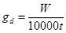
, м3/сут с 1 м2, (1)
где W - нагрузка на дренаж, м3/га,
определяемая согласно рекомендуемому прил. 2, формула 9;
t
- продолжительность расчетного периода, сут.
2.13. Интенсивность
инфильтрационного питания за расчетный период должна определяться по формуле:
g = gd ± gv = gl ± gv,a, (2)
где gl - интенсивность питания
подземных вод за счет фильтрационных потерь из каналов;
gv - интенсивность вертикального водообмена балансового
слоя с нижележащими водоносными слоями;
gv,a - интенсивность вертикального водообмена между
зоной аэрации и подземными водами (без учета потерь из каналов).
2.14. Параметры
постоянного горизонтального, вертикального, комбинированного дренажа необходимо
рассчитывать на среднегодовую нагрузку с учетом пп. 2.206; 2.207 СНиП
2.06.03-85. Для проверки динамики подземных вод в характерные периоды
(после полива, промывки и др.) следует использовать формулы неустановившегося
режима фильтрации.
Окончательный вариант типа и параметров дренажа необходимо
принимать на основании технико-экономических расчетов по минимуму приведенных
затрат.
2.15. На основе данных
водно-солевого режима следует составлять прогноз динамики подземных вод в
условиях орошения и устанавливать необходимость устройства дренажа и сроки его
строительства. При наличии исходного засоления (до начала орошения) и прогнозе
подъема уровня подземных вод до отметки заложения дрен в срок до 10 лет
строительство дренажа должно проводиться одновременно или опережать
строительство оросительной сети. При сроке подъема подземных вод более 10 лет
проектирование дренажа следует осуществлять отдельным проектом, при этом сроки
его строительства, должны быть определены при условии недопущения подъема
подземных вод выше допустимой глубины 4 ¸ 5 м.
2.16. При проектировании
дренажных систем должен выполняться прогноз минерализации дренажного стока согласно
рекомендуемому прил. 5 и
оцениваться возможность его повторного использования.
3.1. Горизонтальный
дренаж следует проектировать в виде закрытых искусственных водотоков, выполненных
из дренажных труб, которые должны удовлетворять требованиям п. 2.205 СНиП
2.06.03-85.
3.2. Размещение
коллекторно-дренажной сети необходимо увязывать с размещением оросительной
сети, организацией территории, гидрографической сетью и должно выполняться с
учетом перспективного развития орошения и дренажа.
3.3. Расположение
коллекторов и дрен в зоне фильтрационного потока из оросительных каналов
допускается в следующих случаях:
оросительный канат
должен иметь противофильтрационные устройства;
коллектор предусмотрен в
виде трубопровода без перфорации («глухим»);
ороситель выполнен в
виде трубопровода или лотка;
расстояние между
оросительными каналами и дреной (коллектором) превышает 10dd, где dd - глубина заложения дрены.
В местах пересечения с
постоянными оросительными каналами, дорогами и лесополосами закрытые дрены
(коллекторы) необходимо устраивать в виде трубы без перфорации на длине не
менее ld = 10b, где b - ширина канала поверху.
3.4. При проектировании
устьевых сооружений закрытых дрен следует предусматривать конструкцию,
обеспечивающую надежность их работы при очистке открытых коллекторов от
заиления и сорной растительности (задвигающиеся устья, «карманы» и пр.).
3.5. Конструкцию
водоприемной части закрытого горизонтального дренажа следует выбирать исходя из
литологического строения и гидрогеологических условий, а также наличия местных
строительных материалов и средств механизации. При выборе материалов и
конструкций водоприемной части следует учитывать, что эксплуатационный срок
службы закрытого дренажа должен быть не менее 30 лет.
3.6. Расчет
конструктивных элементов водоприемной части должен осуществляться по
максимальному дренажному расходу, характеристикам дренируемых грунтов в зоне
заложения дрен (гранулометрический состав, коэффициент фильтрации, объемная и
удельная масса, границы текучести и раскатывания, число пластичности).
Если дренажная линия
прорезает грунты различной категории, расчет конструктивных элементов следует производить
на наихудшие условия. Расчетом должны быть определены внутренний диаметр и
перфорация дренажных труб, толщина и материал фильтра, а также фильтрационные
сопротивления.
3.7. При применении для
строительства дренажа безнапорных труб, не имеющих заводской перфорации, общая
площадь водоприемных отверстий должна быть не менее 15 см2 на 1 м
дрены.
3.8. Размеры
водоприемных отверстий следует принимать при равномерном расположении на
поверхности трубы по табл. 1, при
расположении в нижней половине трубы - по табл. 2.
Таблица 1
|
Форма водоприемного отверстия
|
Диаметр или ширина отверстия
|
|
Круглое
|
(3 … 4)ds,50, но не более 5 мм
|
|
Щель или зазор в стыке
|
(1,5 ... 2)ds,50 но не более 4 мм
|
Таблица 2
Примечание. ds,50
- эффективный диаметр частиц
фильтровой обсыпки или грунта.
3.9. Для защиты
водоприемных отверстий дренажных труб от заиления и увеличения водоприемной
способности дренажа следует применять сыпучие и волокнистые защитно-фильтрующие
материалы, допущенные к применению в установленном порядке.
3.10. При устройстве
дренажа в водонасыщенных грунтах необходимо устройство объемного фильтра.
Расчет фильтра из сыпучего материала приведен в обязательном прил. 6. Допускается применение других
конструкций фильтра при наличии специальных исследований или опыта
эксплуатации.
В сухих и
слабопроницаемых грунтах конструкция фильтра (из сыпучих или волокнистых
материалов) определяется на основании технико-экономического сравнения
вариантов. При выборе фильтра из искусственных волокнистых материалов следует
руководствоваться данными рекомендуемого прил. 7.
3.11. При расчете
параметров дренажа с фильтром из минерально-волокнистых материалов (без
дополнительной подсыпки) и при строительстве его способами, производящими
нарушение естественного сложения грунта вблизи дрены, необходимо дополнительно
учитывать фильтрационное сопротивление, обусловленное экранирующим действием
обратной засыпки грунта и уплотнением придренной зоны. Это фильтрационное
сопротивление определяется исследованиями на опытно-производственных участках
или принимается по данным объекта-аналога.
3.12. Толщину объемного
фильтра из сыпучего материала следует принимать, как правило, не менее 8 см.
Общая потребность в объемных фильтрующих материалах на 1 м дрены должна
определяться на основании принятой технологии строительства, с учетом формы
дренажной полости в грунте, образуемой рабочим органом экскаватора
дреноукладчика.
3.13. При проектировании
закрытого дренажа из трубофильтров объемный фильтр не предусматривается, если
согласно рекомендуемому прил. 7
пористые стенки выполняют роль фильтра. В противном случае необходима укладка
трубофильтров на подсыпку из несортированной песчано-гравийной смеси или песка
толщиной 10 см.
3.14. Гидравлический
расчет открытых коллекторов следует проводить как для проводящих каналов
осушительных систем в соответствии с требованиями СНиП
2.06.03-85 пп. 3.67 ... 3.70. При этом расчетный расход воды в открытых
коллекторах необходимо определять как сумму расходов впадающих в него дрен или
коллекторов низшего порядка.
Гидравлический расчет
дрен следует производить по участкам, отличающимся величиной расхода и уклона,
влияющего на диаметр трубопровода.
3.15. Коллекторы
старшего порядка должны рассчитываться на пропуск расхода дренажного стока,
равного сумме расходов, впадающих в него коллекторов и дрен.
3.16. Расчетный
дренажный сток необходимо определять при значении среднегодового дренажного
модуля стока в период постоянной эксплуатации.
3.17. Пропускную
способность дрен и коллекторов следует проверять по максимальному дренажному
модулю стока, образуемого при производстве влагозарядковых и промывных поливов.
Значения расходов воды в
дренах должны устанавливаться по площади, обслуживаемой дреной и расчетному
модулю дренажного стока.
3.18. Расчетный диаметр
дренажного трубопровода должен определяться из условий пропуска максимального
расхода при полном заполнении его полости и приниматься по стандартному ряду
внутренних диаметров дренажных труб, равному ближайшему в сторону большего
значения. При незначительном расхождении расчетного диаметра от стандартного
(на 5 ... 10 % меньше) следует принимать расчетное значение диаметра труб, при
этом допускается кратковременный (до 5 суток)
напорный режим работы дрен.
3.19. Гидравлический
расчет закрытых дрен и коллекторов, определение глубины заложения и расстояний
между дренами следует проводить согласно обязательному прил. 8 с учетом требований пп. 2.209,
2.210 СНиП 2.06.03-85.
3.20. Для защиты
орошаемой территории от подтопления со стороны рек, водохранилищ и
вышерасположенной территории необходимо предусматривать береговые и головные
дрены, расчет которых следует проводить в соответствии с обязательными прил. 9 и 10.
3.21. С целью экономии
фильтрующего материала и трудовых затрат при расчете параметров дренажной сети
следует также учитывать дренирующее действие открытых и закрытых фильтрующих
коллекторов в соответствии с рекомендуемым прил. 11.
3.22. Сопряжение дрен с
коллекторами в вертикальной плоскости необходимо осуществлять следующим образом:
закрытую дрену с закрытым коллектором - при помощи смотровых колодцев так,
чтобы низ трубы дрены был выше дна трубы коллектора не менее, чем на 0,8Dint, где Dint - внутренний диаметр коллектора; закрытую дрену
с открытым коллектором - при помощи устьевого сооружения так, чтобы расчетный
уровень воды в коллекторе был не менее, чем на 0,3 м ниже низа устьевой трубы
дрены, а максимальный расчетный уровень воды в коллекторе не подтоплял устье
дрены.
3.23. На коллекторно-дренажной сети (КДС) следует предусматривать
сооружения, обеспечивающие:
самотечный отвод
дренажных и сбросных вод с мелиорируемой территории в водоприемник или их
перекачку;
сопряжение бьефов и
устранение опасности размыва;
проезд транспорта вдоль
и через открытые коллекторы;
пересечение КДС с
оросительной сетью;
постоянный надзор за
работой сети;
учет количества и
качества отводимых дренажных вод.
3.24. При невозможности
самотечного отвода дренажных вод местоположение и число дренажных насосных
станций должно быть обосновано технико-экономическим расчетом.
В проектах необходимо
предусматривать опережение ввода в действие насосных станций над строительством
коллекторно-дренажной сети.
3.25. Размещение и
конструкция колодцев должны обеспечивать беспрепятственное проведение
сельскохозяйственных работ и защиту дрен от засорения согласно п. 2.212 СНиП
2.06.03-85.
3.26. Водомерные
сооружения следует совмещать со смотровыми колодцами или устьевыми сооружениями
на закрытых дренах и коллекторах. На открытых коллекторах водомерные сооружения
необходимо предусматривать при их впадении в коллектор высшего порядка и на
границах отделений, хозяйства и гидромелиоративной системы.
3.27. Строительство
горизонтального закрытого дренажа должно осуществляться
комплексно-механизированными способами (узкотраншейный, траншейный и
бестраншейный).
В неустойчивых
(обрушающихся) грунтах и при укладке дрен ниже уровня подземных вод
строительство дренажа узкотраншейным и траншейным способами должно
производиться с предварительным водопонижением по трассе дрены.
В грунтах легкого
механического состава при коэффициенте фильтрации 0,3 м/сут и более допускается
строительство дренажа бестраншейным способом с рулонными защитно-фильтрующими
материалами. При укладке дрен в грунтах с коэффициентом фильтрации менее 0,3
м/сут необходимо устройство объемного фильтра из сыпучих материалов.
При выборе способа
строительства дренажа необходимо использовать прогрессивный опыт его устройства
на орошаемых землях других регионов.
4.1. Вертикальный дренаж
должен проектироваться в виде водозаборных скважин, оборудованных
электропогружными насосами. Условия применения вертикального дренажа определены
п. 2.200 СНиП 2.06.03-85.
4.2. Расчет
вертикального дренажа должен включать:
определение параметров
всей системы (количество скважин, расстояние между ними);
расчет параметров
скважин (дебита, понижения в скважине и в характерных точках массива, радиуса
влияния) и их конструктивных элементов (диаметра и глубины скважин, длины и
диаметра фильтра, толщины и состава обсыпки).
4.3. Размещение скважин
систематического вертикального дренажа в зависимости от увязки с оросительной
сетью следует выполнять в виде сетки с равномерным или неравномерным шагом
скважин в двух взаимно перпендикулярных направлениях. При этом скважины не
должны располагаться у каналов без противофильтрационной «одежды».
4.4. Систематический
вертикальный дренаж и линейные системы скважин должны рассчитываться согласно
рекомендуемому прил. 12. Расчет
линейных систем дренажа следует проводить при заданном понижении воды в
скважине или известном дебите.
4.5. В сложных природных
условиях при перераспределении потоков подземных вод, изменении напорного
питания в результате работы дренажа, взаимодействии крупных дренажных систем
необходимо использовать математическое моделирование.
4.6. Конструкция скважин
вертикального дренажа должна определяться:
литологическим строением
водоносного комплекса и химизмом вод каптируемого пласта;
эксплуатационными
параметрами - дебитом и понижением уровня воды в скважине;
методами производства
строительных работ и оборудования скважин;
схемой и объемом
автоматизации;
требованиями к ремонтным
работам.
4.7. Водоприемная часть
скважин должна удовлетворять следующим требованиям:
диаметр фильтрового
каркаса должен позволять свободный монтаж и демонтаж электропогружного насоса и
приборов автоматики и телемеханики;
обеспечивать
максимальный водозабор, долголетнюю и бесперебойную работу скважин.
4.8. Конструктивные
элементы скважин: глубина, диаметр скважины, длина и диаметр фильтра,
скважность, размер и форма проходных отверстий фильтра и механический состав
гравийной обсыпки должны определяться расчетами.
4.9. Глубину скважины
следует определять по формуле:
dc = lsl + lk + lt, (3)
где dc - глубина скважины, м;
lsl - длина эксплуатационной колонны, м;
lk - длина фильтровой
колонны, м;
lt - длина отстойника, м.
Длину
эксплуатационной колонны следует определять исходя из гидрогеологических
условий, величины понижения, местоположения насоса и условия его работы.
4.10. Длину
фильтра-каркаса следует выбирать с учетом стандартной длины звена заводского
изготовления и с соблюдением требований п. 2.216 СНиП
2.06.03-85.
4.11. Диаметр скважины
должен определяться по следующей формуле:
Dc = Dk + 2ts, (4)
где Dk - диаметр фильтрового
каркаса, м;
ts - толщина гравийного
фильтра, м.
4.12. Диаметр
фильтрового каркаса следует рассчитывать по формуле:
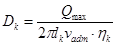
, (5)
где Qmax - максимальный дебит скважины, м3/сут;
hk - скважность
фильтрового каркаса, %.
Допустимую скорость
движения воды в прифильтровой зоне необходимо определять по формуле:
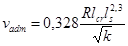
, (6)
где Rlcr - критическое число
Рейнольдса;
ls - коэффициент пористости гравийной обсыпки (0,30 ... 0,40);
k
- коэффициент фильтрации водоносного грунта, м/сут.
Скорость движения воды в фильтровой колонне и
водоподъемных трубах не должна превышать 2 м/с.
4.13. Скважность
фильтров, как правило, следует принимать не более следующих значений: для
стальных каркасно-стержневых и просечных из стальных листов - 30 %; для
асбестоцементных и пластмассовых 25 %.
Увеличение скважности
должно быть обосновано расчетами фильтров на прочность.
4.14. Размеры и форму проходных
отверстий следует подбирать в зависимости от фракционного состава фильтровой
обсыпки. Размеры проходных отверстий при устройстве фильтров с
гравийно-песчаной обсыпкой должны составлять:
для круглой перфорации dk = (1,2 ... 1,5)ds,50;
для щелевой перфорации bkd = (0,75 ... 1,0)ds,50, lkd =(25 ... 35)ds,50,
где ds,50 - средний диаметр фракции гравийно-песчаной
обсыпки, мм;
bkd, lkd - соответственно ширина и длина щелей, мм.
Круглые отверстия на
фильтровом каркасе следует располагать в шахматном порядке, а щелевые -
винтообразно с углом наклона 15°.
Число отверстий,
соответствующее заданной скважности фильтрового каркаса на 1 м его длины,
необходимо определять по формулам.
Для круглой перфорации
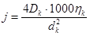
, (7)
Для щелевой:
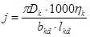
. (8)
4.15. Расчет фильтровой
обсыпки для скважин вертикального дренажа следует производить в соответствии с
обязательным прил. 13.
4.16. Электропогружной
насос следует располагать, как правило, над фильтром. Если по
геолого-структурным условиям невозможно установить насос над фильтром, его
следует располагать в отстойнике или в фильтре (при условии перекрытия этой части
фильтра «глухой» трубой). Выбор электропогружного насоса следует производить
согласно рекомендуемому прил. 14.
4.17. Станция управления насосными агрегатами, средства
автоматики, телемеханики и связи, контрольно-измерительная аппаратура должны
располагаться в специальном шкафу или здании.
4.18. Водоотводящая сеть
скважин вертикального дренажа должна быть выполнена из труб, лотков,
облицованных каналов или в земляном русле. В последнем случае участок водоотвода
длиной 40 ... 50 м от скважины должен быть «глухим» (труба, лоток).
Отводящие трубопроводы
должны быть оборудованы задвижками и водовыпусками в водоприемник. Стенки и дно
водоприемников в месте сброса дренажных вод должны быть надежно защищены от
размыва.
4.19. При проектировании
следует разрабатывать режим работы системы вертикального дренажа в соответствии
с п. 2.220 СНиП 2.06.03-85.
4.20. Режим работы системы вертикального дренажа должен
составляться отдельно для периодов освоения и эксплуатационного. Для
эксплуатационного периода коэффициент полезной работы скважин (КПР) допускается
принимать 0,7 ... 0,8 (отношение продолжительности фактической работы к
календарному времени в году).
4.21. Проектирование
вертикального дренажа без систем автоматики не допускается. Объемы телемеханики
и связи следует устанавливать в каждом конкретном случае и определять на
основании требований к режиму работы скважин и надежности оборудования, с
учетом улучшения условий труда и сокращения численности обслуживающего
персонала.
4.22. Диспетчерское
управление автоматизированной системой должно обеспечивать централизацию
управления и контроль за работой скважин и оборудования.
4.23. Каждая скважина
или группа скважин должна оборудоваться контрольно-измерительной аппаратурой,
позволяющей измерять:
количество откачиваемой
воды;
положение динамического
уровня воды в скважине;
минерализацию воды;
количество затраченной
электроэнергии;
напряжение и силу тока в
цепи.
5.1. Комбинированный
дренаж следует проектировать в случаях, оговоренных в п. 2.200 СНиП
2.06.03-85.
Расчет комбинированного
дренажа следует проводить согласно рекомендуемому прил. 15.
5.2. Расчет линейного
(отсечного) комбинированного дренажа должен выполняться по формулам для
линейного горизонтального дренажа, в которые вместо фильтрационных
сопротивлений горизонтального дренажа подставляются фильтрационные
сопротивления комбинированного дренажа.
5.3. Подключение
скважин-усилителей к горизонтальным дренам должно обеспечивать контроль работы
скважин при их эксплуатации, а также соблюдение требований п. 2.223 СНиП
2.06-03-85. Для этого следует предусматривать:
подключение
водоотводящей трубы скважин к смотровому колодцу выше уровня воды в колодце или
верха дренажных труб не менее чем на 0,6 - 0,8 ее диаметра;
подключение
скважин-усилителей к открытой коллекторной сети на уровне расчетного горизонта
воды, соответствующего пропуску средневегетационного расхода.
5.4. Длину фильтровой
части скважин-усилителей следует принимать равной мощности водоносного пласта,
но, как правило, не более 10 м.
Рекомендуемое
Для создания
оптимального мелиоративного режима необходимо обеспечивать в корнеобитаемом
слое почв режим влажности, при котором не происходит повышения концентрации
почвенного раствора по сумме токсичных солей или отдельных ионов выше
допустимых пределов. Пределы допустимого содержания солей в почве в зависимости
от типа засоления следует назначать в соответствии с рекомендуемым прил. 21 СНиП
2.06.03-85.
При проектировании водного режима почв следует использовать
данные табл. 1.1. Для почв,
подверженных осолонцеванию, необходимо руководствоваться табл. 1.2.
Таблица 1.1
Пределы регулирования
водного режима почв на орошаемых землях
|
Почвы
|
ППК, мг-экв.
100 г
|
Пределы регулирования влажности корнеобитаемого
слоя почвы, в долях от wlim
|
Iп
в долях от суммарного испарения
|
|
Черноземы обыкновенные и южные
|
40
|
0,6 - 0,7
|
£ 0,05
|
|
30
|
0,6 - 0,8
|
£ 0,05
|
|
20
|
0,6 - 0,8
|
£ 0,05 - 0,10
|
|
Лугово-черноземные
|
30
|
0,7 - 0,8
|
£ 0,05
|
|
Темнокаштановые
|
35
|
0,6 - 0,8
|
£ 0,10
|
|
30
|
0,7 - 0,8
|
£ 0,10
|
|
Каштановые
|
20
|
0,7 - 0,8
|
0,10 - 0,15
|
|
Светлокаштановые
|
15
|
0,7 - 0,85
|
0,10 - 0,15
|
|
10
|
0,7 - 0,9
|
0,10 - 0,20
|
|
Сероземные
|
10
|
0,7 - 0,9
|
0,10 - 0,15
|
Примечание. ППК - почвенно-поглощающий
комплекс; wlim - предельная полевая влагоемкость.
Таблица 1.2
Пределы регулирования
солевого режима орошаемых земель, подверженных осолонцеванию
|
Почвы
|
ППК мг-экв.
100 г
|
Na в ППК, %
|
Mg в ППК, %
|
рН
|
|
Черноземы обыкновенные и южные
|
40
|
2 - 8
|
15 - 25
|
7 - 7,5
|
|
30
|
1,5 - 5
|
15 - 25
|
7 - 7,5
|
|
20
|
1,5 - 5
|
15 - 25
|
7 - 7,5
|
|
Лугово-черноземы
|
30
|
1,5 - 5
|
15 - 25
|
7 - 7,5
|
|
Темнокаштановые
|
35
|
1,5 - 5
|
15 - 30
|
7 - 7,3
|
|
30
|
2 - 5
|
15 - 30
|
7 - 7,5
|
|
Каштановые
|
20
|
2 - 6
|
15 - 30
|
7 - 7,5
|
|
Светлокаштановые
|
15
|
5 - 10
|
15 - 30
|
7,5 - 8
|
|
10
|
5 - 10
|
15 - 30
|
8 - 8,2
|
|
Сероземные
|
10
|
5 - 10
|
15 - 30
|
8 - 8,3
|
Рекомендуемое
1. Уравнение водного
баланса
1.1. Общий водный баланс
и баланс вод зоны аэрации для территории, подлежащей мелиорации, в естественном
состоянии (до орошения и ввода дренажа) следует определять по уравнениям
(составляющие уравнений водного баланса даны в м3/га):
а) общий водный баланс
DVtot = (Vq,dw - V,dw) + (Vq,sw - V,sw) + Р
- Eds -
U ± Vv, (1)
где DVtot - суммарное изменение запасов воды в границах
рассматриваемой территории;
Vq,dw - приток поверхностных вод;
V,dw - отток поверхностных
вод за пределы территории;
Vq,sw - приток подземных вод;
V,sw - отток подземных вод;
P - атмосферные осадки;
Eds - испарение с
поверхности почвы;
U - транспирация;
Vv - вертикальный водообмен
балансового слоя с нижележащими водоносными слоями (подпитывание подземных вод
напорными подземными водами или перетекание подземных вод вниз);
б) баланс поверхностных
вод и влаги в зоне аэрации
DVa = (Vq,dw - V,dw) + Р - U ± Vv,a - Eds, (2)
где DVa - изменение запасов
влаги в зоне аэрации в границах рассматриваемой территории;
Vv,a - вертикальный водообмен
между водами зоны аэрации и подземными водами;
в) баланс подземных вод
DVsw = (Vq,sw - V,sw) ± Vv ± Vv,a, (3)
где DVsw - изменение
запасов подземных вод в границах рассматриваемой территории.
1.2. Общий водный баланс
и баланс вод зоны аэрации для территории с существующим орошением до
строительства дренажа следует определять по уравнениям:
а) общий водный баланс
DVtot = (Vq,dw - V,dw) + (Vq,sw - V,sw) +
Р - Eds - U + B - Wd ± Vv, (4)
где В - водозабор в оросительную систему;
Wd - поверхностные сбросы оросительной воды с территории.
Wd = Wint + Wn,
где Wint - концевые сбросы из
оросительных каналов;
Wn - сбросы с поверхности полей при поливе;
В = Int,n + Vl + Wint,
где Int,n - оросительная норма (нетто) с учетом промывного режима (см. СНиП 2.06.03-86);
Int,n = dWb + Wn + WE + Wg + In,
где dWb - дефицит водного
баланса поливаемых сельхозкультур;
In - дополнительная оросительная норма на промывной
режим, принимается по табл. 1.1,
прил. 1;
Wg - дополнительные потери
воды при поливе за счет инфильтрации ниже расчетного слоя;
WE - дополнительные потери
воды на испарение при поливах;
Vl - фильтрационные потери
оросительной, воды из каналов;
б) баланс поверхностных
вод и влаги в зоне аэрации
DVa = (Vq,dw - 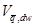
) + P - Eds - U + dWb
+ In ± Vv,a, (5)
в) баланс подземных вод
DVsw = (Vq,sw - 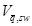
) + Vl ± Vv 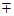
Vv,a. (6)
1.3. Водный баланс для
орошаемой территории при наличии дренажа необходимо определять из уравнений:
а) общий водный баланс
DVtot = (Vq,dw - ) + (Vq,sw - ) + P - Eds - U + B - Wd ± Vv - W, (7)
где W - объем дренажного стока
(нагрузка на дренаж);
б) баланс поверхностных
вод и влаги в зоне аэрации должен определяться согласно уравнению (5);
в) баланс подземных вод
DVsw
= (Vq,sw - ) + Vl ± Vv Vv,a
- W. (8)
Из приведенных
водобалансовых уравнений необходимо определять нагрузку на дренаж и ее
составные элементы для расчета параметров дренажа.
При расчете на
среднегодовые условия многолетнего ряда (DVsw = 0; Vq,sw = = 0) из уравнения (8) нагрузка на дренаж определяется по формуле:
W = Vl ± Vv,a
± Vv. (9)
1.4. Составляющие
водного баланса Vq,sw, ,
Vv после ввода в действие
дренажа могут отличаться от их значений в естественных условиях. В частности,
при действии дренажа приток подземных вод всегда увеличивается, а отток
уменьшается.
В зависимости от
конкретных условий уравнение водного баланса следует упрощать. В частности, при
расположении мелиорируемой территории на водоразделе можно принять Vq,sw = 0; на засоленных землях, характеризующихся слабой отточностью допускается = 0; при отсутствии напорного подпитывания балансового слоя следует
принимать Vv =0; при высокой технике полива Wd = 0; при
применении закрытых оросительных систем значительно уменьшается Vl.
1.5. Величину осадков Р следует принимать по близлежащей метеостанции.
Величина оросительной нормы Int,n
устанавливается
по результатам расчета режима орошения.
Суммарное испарение (Eds + U) в течение вегетационного периода следует принимать
равным водопотреблению, отвечающему применению современной техники орошения,
поддержанию высокого агротехнического фона и плодородия почв, и устанавливается
расчетами или экспериментальными данными.
1.6. Потери на
фильтрацию из оросительных каналов необходимо устанавливать путем проведения
натурных наблюдений на проектируемых землях, по объектам-аналогам или
гидродинамическими расчетами. Эта величина определяется по формуле:
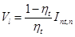
, (10)
где ht - коэффициент полезного действия
внутрихозяйственной оросительной сети.
1.7. Поверхностный
приток Vq,dw и отток на
балансовый участок следует устанавливать по замерам на гидропостах.
Подземный приток Vq,sw и отток должны
определяться по материалам гидрогеологических изысканий и наблюдениям в сети
режимных скважин гидрогеолого-мелиоративной службы.
1.8. При расчете подземного бокового притока на массив
следует руководствоваться формулой
qb = T×i, (11)
где Т - проводимость водоносной толщи;
i
- уклон подземного потока.
1.9. Интенсивность
вертикального водообмена балансового слоя нижележащими водоносными слоями
должна определяться по следующей формуле:
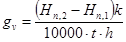
, (12)
где t - продолжительность периода, сут;
Hn,2 - напор вод
нижележащего водоносного слоя, м;
Нn,1 - напор первого от поверхности водоносного
горизонта, м;
k, h - коэффициент фильтрации и мощность
разделяющего слоя, м/сут; м.
1.10. Вертикальный
водообмен балансового слоя с нижележащими водоносными слоями определяются по
формуле:
Vv = gv×1000×t. (13)
1.11. Интенсивность
питания подземных вод за счет фильтрационных потерь из канала определяется по
формуле:
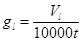
, (14)
где t - продолжительность периода, сут.
1.12. При глубоком
залегании уровня подземных вод (положение уровня за пределами высоты
капиллярного поднятия) величина вертикального водообмена принимается при
непромывном режиме орошения (In = 0):
Vv,a = (0,15 ¸ 0,25)Int,п;
меньшее значение для слабопроницаемых почв,
большее значение - для легких почв;
при промывном режиме
орошения:
V¢v,a = Vv,a + In.
1.13. При близком
залегании уровня подземных вод (положение уровня в пределах высоты капиллярного
поднятия) величина вертикального водообмена за расчетный период определяется по
формуле:
Vv,a = gv,а×100000t,
где t - продолжительность периода, сут.
1.14. При непрерывном
режиме орошения интенсивность вертикального водообмена между зоной аэрации и
подземными водами с учетом водно-физических свойств почвогрунтов при известной
средней за расчетный период времени величине расхода влаги на поверхности почвы
допускается определять по формуле:
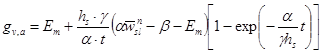
. (15)
При известной средней за
расчетный период в активном слое почвы wm по формуле
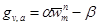
;
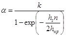
; 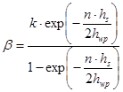
;
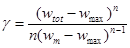
; 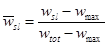
где Eт -
средняя за расчетный период времени, величина расхода влаги на поверхности
почвы, Ет > 0 при инфильтрации, Ет < 0 при испарении, м/сут;
k - коэффициент фильтрации
при полном насыщении, м/сут;
п - показатель степени (n = 3,5 ¸ 6,0);
hs - глубина подземных вод
от поверхности земли (средняя за расчетный период времени), м;
hwp - величина капиллярного
поднятия, м;
t - расчетный период времени (год,
вегетационный период и пр.), сут;
wtot - полная влагоемкость;
wmax - максимальная
молекулярная влагоемкость;
wsl - средняя влажность в
активном слое почвы в начальный период времени;
wm - средняя за расчетный
период времени влажность в активном слое почвы.
Допускается принимать wm » wsl.
1.15. При промывном
режиме орошения интенсивность водообмена между зоной аэрации и подземными
водами определяется по формуле:
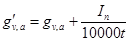
.
1.16. Более обоснованно
интенсивность водообмена (инфильтрации) определяется путем решения уравнения
влагопереноса и фильтрации методами математического моделирования.
2. Уравнение солевого баланса
2.1. Общий солевой
баланс и частные балансы для территории, подлежащей мелиорации в естественном
состоянии (до орошения и ввода дренажа), следует определять по уравнениям:
а) общий солевой баланс
DGtot = (Gq,dw - ) + (Gq,sw - 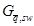
) ± Gv + Gq,p, (16)
где DGtot - суммарное изменение запасов солей в
границах рассматриваемой территории;
Gq,dw - поступление солей с поверхностными водами;
- вынос солей
поверхностными водами;
Gq,sw - поступление солей с перетекающими подземными водами;
- вынос солей с оттоком подземных вод за пределы
территории;
± Gv - поступление и вынос солей при вертикальном
водообмене с глубокими подземными водами (подпитывание напорными водами или
переток подземных вод вниз);
Gq,p - поступление солей с осадками (Gq,p = 0);
б) баланс солей в зоне
аэрации
DGa = (Gq,dw + ) ± Gv,a
± Gq,p, (17)
где DGa - изменение запасов в
зоне аэрации;
Gv,a - поступление и вынос солей при вертикальном водообмене между зоной
аэрации и подземными водами;
в) баланс солей
подземных вод
DGsw = (Gq,sw - ) Gv,a ± Gv, (18)
где DGsw - изменение запасов солей в подземных водах в
границах рассматриваемой территории.
2.2. Солевые балансы для
территории с существующим орошением до строительства дренажа следует определять
по уравнениям:
а) общий солевой баланс
DGtot = (Gq,dw - ) + (Gq,sw - ) + Gq,I - 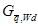
+ Gq,p ± Gv, (19)
где Gq,I - поступление солей с оросительными водами;
- вынос солей с поверхностными сбросами
оросительной воды;
б) баланс солей в зоне
аэрации
DGa = (Gq,dw - ) + Gq,I + Gq,p ± Gv,a; (20)
в) баланс солей
подземных вод
DGsw = (Gq,sw - ) + Gl ± Gv Gv,a, (21)
где Gl - поступление солей в подземные воды с
фильтрационными потерями из оросительных каналов.
2.3. Солевые балансы для
орошаемых территорий при наличии дренажа необходимо определять по уравнениям:
а) общий солевой баланс
DGtot = (Gq,dw - ) + (Gq,sw - ) + Gq,p + Gq,I - ± Gv
-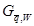
, (22)
где - вынос солей с дренажными водами;
б) баланс солей в зоне
аэрации выражается уравнением (20);
в) баланс солей
подземных вод
DGsw = (Gq,sw - ) + Gl ± Gv,a
± Gv - . (23)
2.4. Балансовые
уравнения необходимо дополнять расчетами прогноза водно-солевого режима.
2.5. Поступление и вынос
с поверхностными водами следует определять по формуле:
(Gq,dw - ) = Сq,dw×Vq,dw - , (24)
где Сq,dw; - минерализация поступающих на массив и вытекающих с массива
поверхностных вод.
2.6. Поступление и вынос
солей с подземными водами следует определять по формуле:
(Gq,sw - ) = Cq,sw×Vq,sw - 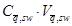
, (25)
где Cq,sw; 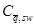
- минерализация поступающих на массив и вытекающих
с массива подземных вод.
2.7. При длительной
работе оросительных каналов допускается принимать Gl = Vl×Cn, где Cn - минерализация поливной воды.
2.8. Вынос солей с
дренажными водами определяется
согласно рекомендуемому прил. 5.
2.9. Величина Gv,a определяется по рекомендуемому прил. 4 из расчета динамики концентрации
почвенного раствора на нижней границе зоны аэрации.
Рекомендуемое
При прогнозировании
водного режима на фоне дренажа балансовым методом запасы влаги в слое dd над начальным уровнем
подземных вод следует определять по формуле:
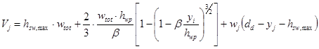
, (1)
где 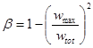
, 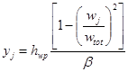
,
hsw,max - максимальная высота уровня подземных вод над
водоупором после полива (t = 0), м;
dd - глубина заложения дренажа, м;
wtot - полная влагоемкость, принимаемая равной wtot = n - p, где п - пористость; p - объем защемленного воздуха, р = 0,05 ... 0,07 (большее значение соответствует
более тяжелым по гранулометрическому составу грунтам);
wmax - максимальная
молекулярная влагоемкость, в долях ед.;
hwp - высота капиллярного поднятия, м;
wj - средняя влажность в слое выше ординаты yj в равновесной эпюре
влажности.
Так, при yj = 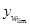
; wi = имеем Vj = , где wlim - предельная полевая влагоемкость.
Схема равновесных эпюр
влажности при различном увлажнении почв приведена на черт. 3.1.
Изменение запасов влаги
за счет суммарного испарения в течение времени Dt следует определять по формуле:
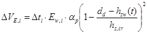
, (2)
где Ew - испаряемость;
ap - коэффициент, учитывающий вид возделываемой
сельскохозяйственной культуры;
hsw(t) - высота уровня подземных вод над водоупором в междренье в момент времени
t от начала их сработки
после полива;
hs,cr - критическая глубина, при которой
прекращается испарение с уровня подземных вод, м.
Изменение запасов влаги
за счет снижения уровня подземных вод при действии дренажа необходимо
определять по формуле:
DVн = [hsw,max - hsw(t)]m(y), (3)
где m(y) - текущая водоотдача;
y
- ордината уровня подземных вод, м.
Величину текущей
водоотдачи при колебании уровня подземных вод в диапазоне глубин, не
превышающих ординату у < hwp следует определять по
формуле:
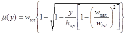
, (4)
При у > hwp коэффициент водоотдачи допускается принимать постоянным и
равным
m = wtot - wm, (5)
где wm - средняя для данного периода влажность в
активном слое почвы, % принимается равным wm = (0,7 ... 0,9)wlim.
Общее изменение запасов
влаги в слое выше плоскости заложения дренажа следует определять по формуле:
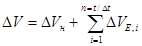
, (6)
Восполнение запасов воды
в свободной емкости зоны аэрации должно регулироваться сроками и нормами подачи
воды при поливах. В период между поливами запасы влаги зоны аэрации расходуются
на суммарное испарение и за счет действия дренажной системы. Полив необходимо
производить тогда, когда влажность в активном слое достигает допустимого
предела в соответствии с прил. 1.
Для систематического
дренажа (горизонтального, комбинированного или в виде линейного ряда скважин) в
однородном грунте с постоянной проводимостью Т с учетом несовершенства дрен для определения положения
уровня подземных вод следует вести по следующим формулам:
а) при определении
превышения уровня подземных вод посередине между дренами
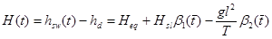
; (7)
б) при определении
притока к дрене
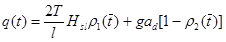
; (8)
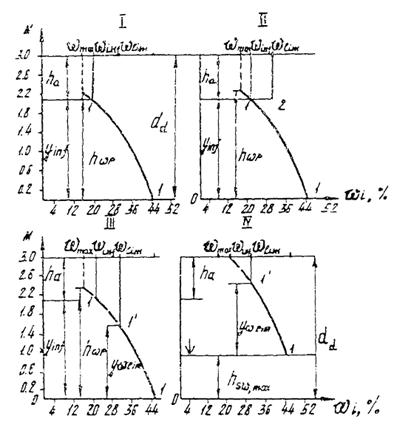
Черт. 3.1. Схема равновесных эпюр влажности при различном
увлажнении почвогрунтов
I - эпюра влажности почв перед поливом; II - эпюра влажности после полива, когда
увлажняется только активный слой почвы до значения wlim. Поливная норма равна dw = ha(wlim - winf); winf
- значение нижнего предела
допустимой влажности; ha » 1 м - активный слой почвы; III - эпюра влажности после полива, когда
увлажняется слой почвы до значения wlim в равновесной эпюре влажности; IV - эпюра влажности после промывного
полива. Поливная норма равна dw = ha(wlim - winf) + In,i; In,i - объем
воды, расходуемый на поддержание необходимого солевого режима i-го слоя.
в) при определении
превышения уровня подземных вод вблизи дрены
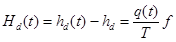
. (9)
В приведенных формулах:
H - превышение уровня подземных вод в междренье над горизонтом
воды в дрене в момент времени t,
м;
Неq - превышение уровня подземных вод при
установившейся фильтрации (t ® ¥), м, определяется по формуле:
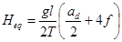
,
Hsl - начальное превышение уровня подземных вод,
соответствующее уровню hsw,sl принимается
равным Hsl = hsw,sl - hd;
hsw,sl - начальная высота уровня подземных вод над водоупором, м;
hd - высота от водоупора до уровня воды в дрене, м;
ad - расстояние между
дренами, м;
T
- проводимость, принимаемая T
= k×h, м2/сут;
f - фильтрационное сопротивление,
обусловленное гидродинамическим несовершенством дренажа по степени вскрытия
водоносной толщи, определяется по формулам прил. 8;
b1, b2 - коэффициенты, которые
в зависимости от времени = t/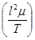
и параметра несовершенства 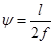
определяются
по графикам черт. 3.2 - 3.5;
g - интенсивность инфильтрационного
питания, м/сут;
k - коэффициент фильтрации,
м/сут;
h - средняя высота
подземного потока, м.
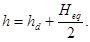
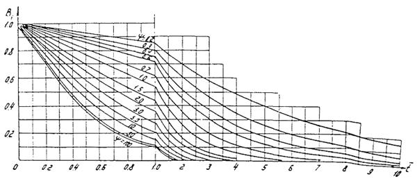
Черт. 3.2. График для
определения коэффициента b1
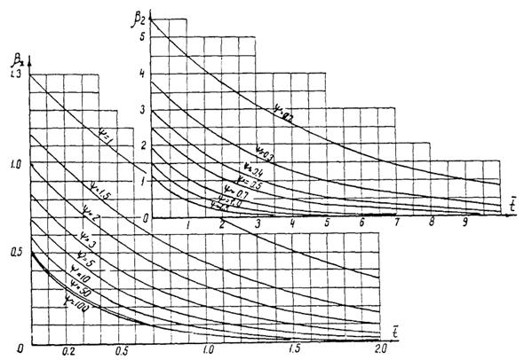
Черт. 3.3. График для
определения коэффициента b2
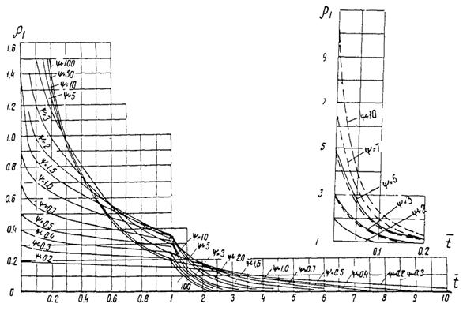
Черт. 3.4. График для
определения коэффициента r1
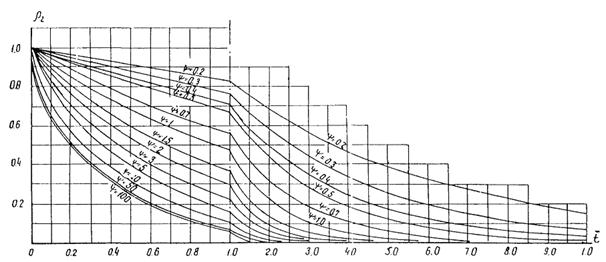
Черт. 3.5. График для
определения коэффициента r2
Задачей расчета солевого
режима является обеспечение благоприятного солевого режима в активном слое
почвы.
Для условий пустынной и
полупустынной зоны перераспределение легкорастворимых солей (Na, Cl, сумма токсичных солей) для равномерной эпюры
засоления в однородной мощной толще (h ® ¥) следует определять по
формуле:
C = Cn + 0,5(Csl - Cn)F(a×Zsl), (1)
где С
- концентрация солей в почвенном растворе.
По формуле (1) построена номограмма (черт. 4.1).
Для пользования
номограммой необходимо знать следующие параметры:
1) коэффициент
конвективной диффузии md;
2) активную пористость
грунта nа;
3) скорость нисходящей
фильтрации промывных вод (осредненное значение) vk;
4) координату точки х = х1, в которой определяется концентрация солей С(x1, t1) в заданный момент
времени t1, отсчитываемой от начального.
Имея эти данные,
подсчитывается 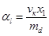
и 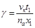
. Далее, находя al по оси абсцисс
восстанавливается перпендикуляр до пересечения с линией g. Через полученную точку проводится горизонталь,
на оси ординат берется значение 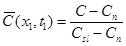
, откуда найдется концентрация С(x1,t1) = Сn + 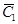
(Сsl - Сn),
где Сn - концентрация солей в оросительной воде при
орошении или промывке, г/л или %;
Сsl - концентрация солей в верхнем горизонте (при i = 0), г/л.
В случае неравномерного
засоления водонасыщенной однородной толщи неограниченной мощности для расчета
солепереноса следует пользоваться формулами:
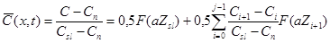
; (2)
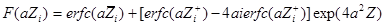
,
где 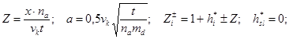
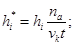
(3)
erfc(-U) = 2 - erfc(U).
Черт. 4.1. График
зависимости для
определения концентрации солей, промывной нормы, коэффициента конвективной
диффузии и процесса рассоления равномерно засоленной толщи почвогрунтов
В формулах (2) и (3) приняты обозначения:
i - номер горизонта отбора проб почвы; i = 0 - верхний горизонт;
j - количество горизонтов отбора проб почвы;
Сi (i = 0, 1, … j) - содержание солей в i-м горизонте; Сi
(при i = 0) Сsl, г/л;
hi - расстояние от дневной
поверхности до i-го горизонта, м;
erfc(u); ierfc(u) - функции, определяются по табл. 4.1; 4.2.
Для почв сухостепной и
степной зон прогноз солевого режима и динамики поглощенных оснований (Nа, Cа, Mg) следует вести на основе решения уравнений
конвективной диффузии (4) и уравнений
изотерм ионного обмена (5).
; (4)
p = 1, 2, 3;
; (5)
N1 + N2 + N3 = Ntot(x);
t = 0{Cp(x,0) = Csl,p(x); (6)
где Сp(х,t) - концентрация ионов в почвенном растворе, мг-экв/100 г;
Np(x,t) - содержание ионов в ППК, мг-экв/100 г;
x - глубина (координата) от
поверхности почвы, м; 0 £ x £ h;
t
- время, сут;
h
- мощность расчетного слоя почвы, м;
p = 1, 2 и 3 относятся соответственно к характеристикам ионов Na, Ca, Mg;
a1; a2 - коэффициенты изотерм ионообменной сорбции.
Решение уравнение (4) - (6) позволяет определить динамику ионов Na, Ca, Mg в почвенном растворе и ППК, если предварительно
будут определены их начальные распределения в почвенном растворе Сsl,p(x),
их суммарное содержание в ППК Ntot(x), их концентрация в поливной воде Сn,p, опытные параметры na, a1, a2, а также если известен
закон изменения скорости фильтрации Vk(t). Решение сформулированной задачи осуществляется
методом конечных разностей.
Допускается прогноз
водно-солевого режима выполнять на основе нелинейных моделей влагосолепереноса.
Таблица 4.1
Значение функции erfc(U)
|
U
|
0
|
1
|
2
|
3
|
4
|
5
|
6
|
7
|
8
|
9
|
|
0,0
|
1,00000
|
0,98872
|
0,97744
|
0,96616
|
0,95489
|
0,94363
|
0,93238
|
0,92114
|
0,90992
|
0,89872
|
|
0,1
|
0,88754
|
0,87638
|
0,86524
|
0,85413
|
0,84305
|
0,83200
|
0,82099
|
0,81001
|
0,79906
|
0,78816
|
|
0,2
|
0,77730
|
0,76648
|
0,75570
|
0,74498
|
0,73430
|
0,72367
|
0,71310
|
0,70258
|
0,69212
|
0,68172
|
|
0,3
|
0,67137
|
0,66109
|
0,65087
|
0,64072
|
0,63064
|
0,62062
|
0,61067
|
0,60079
|
0,59099
|
0,58126
|
|
0,4
|
0,57161
|
0,56203
|
0,52253
|
0,54311
|
0,53377
|
0,52452
|
0,51534
|
0,50625
|
0,49725
|
0,48833
|
|
0,5
|
0,47950
|
0,47076
|
0,46210
|
0,45354
|
0,44506
|
0,43668
|
0,42838
|
0,42018
|
0,41208
|
0,40406
|
|
0,6
|
0,39614
|
0,38832
|
0,38059
|
0,37295
|
0,36541
|
0,35797
|
0,35062
|
0,34337
|
0,33622
|
0,32916
|
|
0,7
|
0,32220
|
0,31533
|
0,30857
|
0,30190
|
0,29532
|
0,28884
|
0,28246
|
0,27618
|
0,26999
|
0,26390
|
|
0,8
|
0,25790
|
0,25200
|
0,24619
|
0,24048
|
0,23486
|
0,22933
|
0,22390
|
0,21856
|
0,21331
|
0,20816
|
|
0,9
|
0,20309
|
0,19812
|
0,19323
|
0,18844
|
0,18373
|
0,17911
|
0,17457
|
0,17013
|
0,16577
|
0,16149
|
|
1,0
|
0,15730
|
0,15319
|
0,14916
|
0,14522
|
0,14135
|
0,13756
|
0,13386
|
0,13023
|
0,12667
|
0,12320
|
|
1,1
|
0,11980
|
0,11647
|
0,11321
|
0,11003
|
0,10692
|
0,10388
|
0,10090
|
0,09800
|
0,09516
|
0,09239
|
|
1,2
|
0,08969
|
0,08704
|
0,08447
|
0,08195
|
0,07949
|
0,07710
|
0,07476
|
0,07249
|
0,07027
|
0,06810
|
|
1,3
|
0,06599
|
0,06394
|
0,06193
|
0,05998
|
0,05809
|
0,05624
|
0,05444
|
0,05269
|
0,05098
|
0,04933
|
|
1,4
|
0,04771
|
0,04615
|
0,04462
|
0,04314
|
0,04170
|
0,04030
|
0,03895
|
0,03763
|
0,03635
|
0,03510
|
|
1,5
|
0,03389
|
0,03272
|
0,03159
|
0,03048
|
0,02941
|
0,02838
|
0,02737
|
0,02640
|
0,02545
|
0,02454
|
|
1,6
|
0,02365
|
0,02279
|
0,02196
|
0,02116
|
0,02038
|
0,01962
|
0,01890
|
0,01839
|
0,01751
|
0,01685
|
|
1,7
|
0,01621
|
0,01559
|
0,01500
|
0,01442
|
0,01387
|
0,01333
|
0,01281
|
0,01231
|
0,01183
|
0,01136
|
|
1,8
|
0,01091
|
0,01048
|
0,01006
|
0,00965
|
0,00926
|
0,00889
|
0,00853
|
0,00818
|
0,00784
|
0,00752
|
|
1,9
|
0,00721
|
0,00691
|
0,00662
|
0,00634
|
0,00608
|
0,00582
|
0,00557
|
0,00534
|
0,00511
|
0,00489
|
|
2,0
|
0,00468
|
0,00448
|
0,00428
|
0,00409
|
0,00391
|
0,00374
|
0,00358
|
0,00342
|
0,00327
|
0,00312
|
|
2,1
|
0,00298
|
0,00285
|
0,00272
|
0,00259
|
0,00247
|
0,00236
|
0,00225
|
0,00215
|
0,00205
|
0,00195
|
|
2,2
|
0,00186
|
0,00178
|
0,00169
|
0,00161
|
0,00154
|
0,00145
|
0,00139
|
0,00133
|
0,00126
|
0,00120
|
|
2,3
|
0,00114
|
0,00109
|
0,00108
|
0,00098
|
0,00094
|
0,00089
|
0,00085
|
0,00080
|
0,00076
|
0,00072
|
|
2,4
|
0,00069
|
0,00065
|
0,00062
|
0,00059
|
0,00056
|
0,00053
|
0,00050
|
0,00048
|
0,00045
|
0,00043
|
|
2,5
|
0,00041
|
0,00039
|
0,00037
|
0,00035
|
0,00033
|
0,00031
|
0,00029
|
0,00028
|
0,00026
|
0,00025
|
|
2,6
|
0,00024
|
0,00022
|
0,00021
|
0,00020
|
0,00019
|
0,00018
|
0,00017
|
0,00016
|
0,00015
|
0,00014
|
|
2,7
|
0,00013
|
0,00013
|
0,00012
|
0,00011
|
0,00011
|
0,00010
|
0,00009
|
0,00009
|
0,00008
|
0,00008
|
|
2,8
|
0,00008
|
0,00007
|
0,00007
|
0,00006
|
0,00006
|
0,00006
|
0,00005
|
0,00005
|
0,00005
|
0,00004
|
|
2,9
|
0,00004
|
0,00004
|
0,00004
|
0,00003
|
0,00003
|
0,00003
|
0,00003
|
0,00003
|
0,00002
|
0,00002
|
|
3,0
|
0,00002
|
0,00002
|
0,00002
|
0,00002
|
0,00002
|
0,00002
|
0,00001
|
0,00001
|
0,00001
|
0,00001
|
|
3,1
|
0,00001
|
0,00001
|
0,00001
|
0,00001
|
0,00001
|
0,00001
|
0,00001
|
0,00001
|
0,00001
|
0,00001
|
|
3,2
|
0,00001
|
0,00001
|
0,00001
|
0,00000
|
0,00000
|
0,00000
|
0,00000
|
0,00000
|
0,00000
|
0,00000
|
Таблица 4.2
Значение функции i erfc(U)
|
U
|
0
|
1
|
2
|
3
|
4
|
5
|
6
|
7
|
8
|
9
|
|
0,0
|
0,5642
|
0,5542
|
0,5444
|
0,5350
|
0,5251
|
0,5156
|
0,5062
|
0,4969
|
0,4878
|
0,4787
|
|
0,1
|
0,4698
|
0,4610
|
0,4523
|
0,4437
|
0,4352
|
0,4268
|
0,4186
|
0,4104
|
0,4024
|
0,3944
|
|
0,2
|
0,3866
|
0,3789
|
0,3713
|
0,3638
|
0,3564
|
0,3491
|
0,3419
|
0,3348
|
0,3278
|
0,3210
|
|
0,3
|
0,3142
|
0,3075
|
0,3010
|
0,2945
|
0,2882
|
0,2819
|
0,2758
|
0,2722
|
0,2637
|
0,2579
|
|
0,4
|
0,2521
|
0,2465
|
0,2409
|
0,2354
|
0,2300
|
0,2247
|
0,2195
|
0,2144
|
0,2094
|
0,2045
|
|
0,5
|
0,1996
|
0,1948
|
0,1902
|
0,1856
|
0,1811
|
0,1767
|
0,1724
|
0,1681
|
0,1640
|
0,1600
|
|
0,6
|
0,1559
|
0,1519
|
0,1481
|
0,1443
|
0,1406
|
0,1370
|
0,1335
|
0,1300
|
0,1266
|
0,1233
|
|
0,7
|
0,1200
|
0,1168
|
0,1137
|
0,1107
|
0,1077
|
0,1047
|
0,1019
|
0,0091
|
0,0964
|
0,0937
|
|
0,8
|
0,0911
|
0,0885
|
0,0860
|
0,0836
|
0,0812
|
0,0789
|
0,0766
|
0,0744
|
0,0723
|
0,0702
|
|
0,9
|
0,0681
|
0,0661
|
0,0641
|
0,0662
|
0,0604
|
0,0586
|
0,0568
|
0,0561
|
0,0534
|
0,0517
|
|
1,0
|
0,0502
|
0,0486
|
0,0471
|
0,0456
|
0,0442
|
0,0428
|
0,0414
|
0,0401
|
0,0388
|
0,0376
|
|
1,1
|
0,0364
|
0,0352
|
0,0340
|
0,0329
|
0,0319
|
0,0308
|
0,0298
|
0,0288
|
0,0278
|
0,0269
|
|
1,2
|
0,0260
|
0,0251
|
0,0242
|
0,0234
|
0,0226
|
0,0218
|
0,0211
|
0,0203
|
0,0196
|
0,0189
|
|
1,3
|
0,0182
|
0,0176
|
0,0170
|
0,0164
|
0,0158
|
0,0152
|
0,0146
|
0,0141
|
0,0136
|
0,0131
|
|
1,4
|
0,0126
|
0,0121
|
0,0117
|
0,0113
|
0,0108
|
0,0104
|
0,0100
|
0,0097
|
0,0093
|
0,0089
|
|
1,5
|
0,0086
|
0,0082
|
0,0079
|
0,0076
|
0,0073
|
0,0070
|
0,0068
|
0,0065
|
0,0062
|
0,0060
|
|
1,6
|
0,0057
|
0,0055
|
0,0053
|
0,0051
|
0,0049
|
0,0047
|
0,0045
|
0,0043
|
0,0041
|
0,0039
|
|
1,7
|
0,0038
|
0,0036
|
0,0035
|
0,0033
|
0,0032
|
0,0030
|
0,0029
|
0,0028
|
0,0027
|
0,0025
|
|
1,8
|
0,0024
|
0,0023
|
0,0022
|
0,0021
|
0,0020
|
0,0019
|
0,0019
|
0,0018
|
0,0017
|
0,0016
|
|
1,9
|
0,0015
|
0,0015
|
0,0014
|
0,0013
|
0,0013
|
0,0012
|
0,0012
|
0,0011
|
0,0010
|
0,0010
|
|
2,0
|
0,0009
|
0,0009
|
0,0009
|
0,0008
|
0,0008
|
0,0007
|
0,0007
|
0,0007
|
0,0006
|
0,0006
|
|
2,1
|
0,0006
|
0,0005
|
0,0005
|
0,0005
|
0,0005
|
0,0004
|
0,0004
|
0,0004
|
0,0004
|
0,0004
|
|
2,2
|
0,0003
|
0,0003
|
0,0003
|
0,0003
|
0,0003
|
0,0002
|
0,0002
|
0,0002
|
0,0002
|
0,0002
|
|
2,3
|
0,0002
|
0,0002
|
0,0002
|
0,0001
|
0,0001
|
0,0001
|
0,0001
|
0,0001
|
0,0001
|
0,0001
|
|
2,4
|
0,0001
|
0,0001
|
0,0001
|
0,0001
|
0,0001
|
0,0001
|
0,0000
|
0,0000
|
0,0000
|
0,0000
|
Определение коэффициента конвективной
диффузии md
Значение коэффициента
конвективной диффузии тd следует принимать равным тd = тmd + l/vk(t)/, где
l - коэффициент гидродинамической дисперсии,
определяемый по графику (черт. 4.2);
тmd - коэффициент
молекулярной диффузии тmd @ 10-4 м2/сут.
Коэффициент конвективной
диффузии тd - допускается определять с помощью номограмм
(черт. 4.1). Для этого необходимо
знать: vk - скорость фильтрации, nа - активная пористость грунта, Сп; Сsl; С(х1t1) концентрации солей соответственно в промывной
воде, начальную и в каком-либо сечении x1 толщи грунта в момент времени t1. Находятся величины и . Далее, из
точки , взятой на ординате графика проводится
горизонтальная прямая до пересечения с линией
g =
g1. Из полученной
точки опускается перпендикуляр на ось абсцисс. Находится число и, следовательно, .
Коэффициент
гидродинамической дисперсии допускается определять по номограмме (черт. 4.3). Для этого необходимо знать: и для нахождения
al
.
Черт.
4.2. Зависимость коэффициента гидродинамической дисперсии l по
иону хлора для почв различного гранулометрического состава
Черт. 4.3. График для
определения коэффициента гидродинамической дисперсии
Определение
коэффициентов изотерм ионообменной сорбции a1 и a2
Коэффициенты изотерм
ионообменной сорбции следует определять по данным почвенным изысканиям,
моделированием процесса «засоление - рассоление» на опытных площадках и
монолитах. Для этой цели составляется таблица, в которую записываются для
каждого горизонта данные по содержанию катионов Na, Ca, Mg в почвенном растворе (C1; С2; С3) и ППК (N1; N2; N3) и их отношения также в
растворе и ППК. Полученные данные наносятся на график, по оси абсцисс
откладываются значения и , а
по оси ординат - значения и
.
Полученные области точек аппроксимируются прямой, по углу наклона которой
определяют значения a1 и a2. Для ориентировочных
расчетов значения a1 и a2 можно определять в
зависимости от величины ППК; a1 = 0,0265 ППК, a2 = 0,033 ППК.
Порядок расчета
Расчет солевого режима
должен выполняться в следующей последовательности:
а) по результатам
почвенной съемки устанавливаются расчетные эпюры засоления по отдельным
интересующим ионам или сумме токсичных солей (расчет следует выполнять для
эпюры 90 %-ной вероятности по засолению);
б) для рассматриваемой
территории подбираются севообороты с характерным набором культур. Для каждой
культуры в севообороте устанавливается режим орошения (расчет выполняется до
наступления квазистационарного режима - одна - две ротации севооборота);
в) определяются
гидрохимические параметры g и пa, коэффициенты изотерм ионнообменной сорбции a1 и a2;
г) составляется таблица
статей водного баланса по периодам;
д) определяется
распределение влаги и солей по глубине;
е) для интересующих горизонтов строятся графики изменения
запасов влаги в почве, концентрации солей в почвенном растворе и положение
уровня подземных вод во времени.
В случае ухудшения
мелиоративного состояния данной территории корректируется либо режим орошения и
предусматриваются химические мелиоранты, либо положения уровня грунтовых вод,
либо то и другое вместе и вновь составляется прогноз водно-солевого режима.
Рекомендуемое
Для горизонтального
дренажа прогноз и оценку изменения минерализации дренажных вод следует
определять по формуле:
, (1)
где CW - минерализация
дренажных вод;
Int,n; W - соответственно объем поданной на поле воды и
отведенной дренажем воды за единицу времени (год), м3/га;
wlim - водоудерживающая способность грунтов (предельная
полевая влагоемкость расчетной толщи), м3/га;
Сn - концентрация солей в
промывной воде при орошении или промывке, г/л или %;
Gsl - начальный (исходный)
запас солей в расчетной толще, кг/га;
a - показатель
относительного содержания хлоридов (a1), сульфатов (a2), гидрокарбонатов (a3) в общей сумме исходных
минеральных солей, доли единицы;
t - время, год;
c - параметр, учитывающий
«активность» выщелачивания солей, соответственно (c1), сульфатов (c2), гидрокарбонатов (c3).
Рекомендуются следующие
значения параметров:
c1 = 1,165 для хлоридов;
c2 = 0,426 для сульфатов;
c3 = 0,265 для гидрокарбонатов.
При расчете изменения
концентрации одного из анионов следует принять ai = 1 для прогнозируемого аниона и ai = 0 - для двух остальных анионов, а значения параметров Сn, Сsl и c взять соответствующими этому ингредиенту.
В сложных
гидрогеологических условиях следует выполнять моделирование на ЭГДа. При этом
фильтрационный поток разбивается в междренье на ленты тока. Концентрация солей
воды, поступающая в дрены, определяется по формуле:
, (2)
где qi - расход i-й ленты тока;
j - число лент тока;
CW,i - концентрация солей в i-й
ленте тока на выходе в дрену, определяется по номограмме черт. 4.1 (прил. 4).
При применении вертикального систематического дренажа,
когда водозабор производится из нижнего хорошо проницаемого слоя, перекрытого сверху
слабопроницаемой засоленной покровной толщей, прогнозную минерализацию
дренажного стока для расчетного периода времени допускается определять по
формуле:
, (3)
где СW(tv) = СW(uDt) - осредненная
минерализация дренажных вод, г/л, отводимой скважиной в момент времени tv = uDt, здесь Dt - шаг времени,
принимаемый Dt
= T/j, j - число одинаковых интервалов времени, на
которое разбит расчетный период Т = jDt, u = 1, 2 ... j;
С1(h1; ti) = C1(h1; iDt) - минерализация раствора, поступающего
из верхнего покровного слоя в нижний слой через кровлю в момент времени ti = iDt, г/л;
С20 - исходная осредненная
концентрация солей в нижнем дренируемом слое, г/л;
h1; h2 - мощность (высота)
соответственно верхнего и нижнего слоев, м;
vk - средняя за расчетный период Т интенсивность поступления воды из покровного
слоя в нижний, м/сут;
Т - продолжительность
расчетного периода, сут.;
n2 - пористость нижнего
слоя.
Минерализация воды С1(h1; t), поступающей из верхнего покровного слоя в нижний
слой в момент времени t, определяется по номограмме черт. 4.1 (прил. 4).
Рекомендуемое
1. Водопроницаемость
фильтра должна быть выше водопроницаемости дренируемого грунта:
при дренировании связных
грунтов
; (1)
при дренировании
несвязных грунтов
, (2)
где ks - коэффициент фильтрации
обсыпки, м/сут;
k - коэффициент фильтрации
грунта, м/сут.
2. Фильтры, защищающие
несвязные грунты, должны быть несуффозионными.
Несуффозионность
материала проверяется по условию
, (3)
где ds,3; ds,17 - диаметр частиц, мельче которых в материале
фильтра содержится соответственно 3 %, 17 % по весу;
hs - коэффициент неоднородности фильтровой обсыпки;
ns - пористость фильтровой
обсыпки, определяемой по формуле:
ns = na - 0,1×lghs, (4)
здесь na
= 0,45 - для щебенистых
грунтов;
na = 0,40 - для песчано-гравийно-галечниковых грунтов.
3. При подборе
фильтровой обсыпки коэффициент неоднородности hs должен удовлетворять условию:
при устройстве дренажа в
связных грунтах
Ip > 7; 2,5 £ hs £ 50; (5)
при устройстве дренажа в
слабосвязных грунтах
Ip < 7; 2,5 £ hs £ 35; (6)
при устройстве дренажа в
несвязных грунтах
2,5 £ hs £ 25, (7)
где Ip - число пластичности.
В случае использования
материалов фильтра с коэффициентом неоднородности, выходящим за пределы
указанного диапазона, возможность их применения должна быть обоснована
лабораторными и натурными исследованиями.
4. Толщина фильтра ts должна определяться из
условия
ts ³ (5 … 7)ds,85. (8)
4.1. Толщина фильтра и
его фракционный состав должны удовлетворять условиям и способам производства
работ ts ³ ts,min, где ts,min - минимальная толщина фильтра (8 ... 15
см), обусловленная способом производства работ.
4.2. Содержание в
фильтре частиц диаметром менее 0,1 мм не должно быть более 10 %.
4.3. Максимальный
диаметр фракции в фильтре защищающего связный дренируемый грунт не должен
превышать 40 мм.
5. При устройстве
дренажа в связных грунтах зерновой состав фильтра должен удовлетворять условию
dsp,cal ³ dsp,max, (9)
где dsp,cal - расчетный диаметр пор фильтра, см;
dsp,max - максимальный диаметр пор
фильтра, см.
5.1. Если число
пластичности дренируемого грунта Ip ³ 7 при колебании его влажности в интервале пластичности wL ³ w ³ wp, (w; wL; wp - влажность соответственно на границе текучести и
пластичности), объемный вес дренируемого грунта (скелета) принимается из
условия
, (10)
где e - коэффициент пористости дренируемого грунта при
соответствующей влажности w;
g - удельный вес
дренируемого грунта, г/см3.
5.2. Расчетный диаметр
пор фильтра определяется по формуле
, (11)
где Ia - эмпирический коэффициент, принимаемый равным
Ia = 0,0076(16,6 -
ucal)(ucal - 1,0);
ucal - расчетный градиент напора в дренируемом грунте
на границе с фильтром;
ba - угол между направлением
скорости фильтрации и силой тяжести принимается соsba = 1.
5.3. Если число
пластичности дренируемого грунта Ip < 7 и условие (10) не выполняется, то расчетный диаметр пор фильтра
определяется по формуле
. (12)
Для дренируемого грунта
супесь при условии Ip < 7
. (13)
Для пылеватых грунтов с
содержанием частиц диаметром менее 0,05 мм, более 20 % по весу
. (14)
6. Максимальный диаметр
пор фильтра вычисляется по формуле
, (15)
где r1, r2 - коэффициенты, принимаемые равными
r1 = 1 + 0,05hs; .
7. При устройстве дренажа в несвязных
несуффозионных грунтах, исходя из условия непросыпаемости, гранулометрический
состав фильтра должен удовлетворять условию
hm £ hm,adm, (16)
где hm - межслойный
коэффициент;
hm,adm - допустимый межслойный коэффициент.
8. Допустимый межслойный
коэффициент вычисляется по формуле
. (17)
9. Фактический
межслойный коэффициент определяется по формуле
, (18)
где ds,17 - диаметр частиц, которых в материале фильтра содержится 17 %
по весу;
db - диаметр сводообразующих частиц, берется с кривой
гранулометрического состава дренируемого грунта в зависимости от процентного
содержания сводообразующих частиц xb.
10. Процентное
содержание сводообразующих частиц в зависимости от коэффициента неоднородности
дренируемого грунта и материала фильтра определяется по формуле
, (19)
где h - коэффициент
однородности дренируемого грунта;
ds - коэффициент, учитывающий размер пор фильтрового
материала ds = 3 ... 5 - для
песчано-гравийных и гравийно-песчаных смесей; (ds = 5 - 8 для
щебенистого материала);
c - показатель степени
c = 1 + 1,28×lghs.
11. При устройстве
дренажа в несвязных суффозионных грунтах диаметр сводообразующих частиц фильтра
должен удовлетворять зависимости
db = (3 … 5)dg,max, (20)
где dg,max - максимальный диаметр суффозионных частиц дренируемого
грунта, определяемый по формуле
, (21)
где n - пористость дренируемого грунта в долях единицы;
k - коэффициент фильтрации
дренируемого грунта, м/сут;
ga - ускорение силы тяжести, м/сут;
y - коэффициент запаса, принимаемый y = 1 ... 1,5;
Iw - коэффициент кинематической вязкости воды;
mсr
-
коэффициент критической скорости, определяемый по формуле:
, (22)
где gu - объемный вес дренируемого грунта (скелета);
fI - приведенный коэффициент
трения, определяемый по формуле
fI = 0,82 - 1,8п + 0,0062(h - hc), (23)
где hc - коэффициент неоднородности
скелета дренируемого грунта, при h < 50
и 0,26 £ n £ 0,40 следует принимать hc = 5.
При условии dg,max < ds,3 расчетное значение db принимается по кривой
зернового состава дренируемого грунта, принимая процентное содержание xb, частиц по формуле (19) при ds = 3.
При dg,max > ds,3 диаметр сводообразующих частиц определяется по
формуле (20).
Проектирование зернового
состава фильтра при дренировании связных грунтов
12. Построение верхней границы зоны допустимых отклонений
необходимо выполнять в следующей последовательности:
а) из условия (8) определяется величина диаметра
; (24)
б) вычисляется величина
эффективного диаметра частиц, фильтра
, (25)
где a - находится по формуле
a = 0,0118(hs + 210)(hs - 1,95);
в) определяется диаметр
частиц фильтра при hs £ 10
, (26)
где l - коэффициент,
принимаемый по формуле
;
г) определяется контролирующий диаметр частиц
фильтра
ds,60 = hs×ds,10; (27)
д) максимально
допустимая крупность фракций фильтра принимается равной ds,100 £ 0,5ts;
ж) через полученные
значения ds,10; ds,17; ds,60; ds,85; ds,100 проводится верхняя граница зернового состава фильтра.
13. Построение нижней
границы зоны допустимых отклонений необходимо выполнять в следующей
последовательности:
а) принимается в
соответствии с требованием допустимого содержания частиц диаметра меньше 0,1
мм, ds,10 = 0,1 мм,
б) вычисляется
минимальное значение контролирующего диаметра по формуле (27), где hs = 2;
в) при hs = 2 вычисляется диаметр
ds,85 по формуле (25).
Через полученные
значения ds,10; ds,60; ds,85 проводится нижняя граница зернового состава фильтра.
14. Проектирование
кривой зернового состава необходимо выполнять в следующей последовательности:
а) в зависимости от
числа пластичности, влажности грунта и выполнения условия (10) по формуле (11)
или (12 - 14) находится расчетный диаметр пор фильтра;
б) принимается величина
коэффициента неоднородности фильтра в пределах допустимого. Определяется
пористость фильтра по формуле (4);
в) по значениям dsp,cal, пs и hs вычисляется максимальный размер фракций фильтра ds,17 по формуле
;
г) по формулам (25, 26, 27) при известном ds,17 определяется ds,10; ds,60; ds,85, после
проводится проектная кривая зернового состава.
15. Предельные кривые
зерновых составов фильтровых материалов при дренировании супесчаных суглинистых
и пылеватых грунтов даны на черт. 6.1
(прил. 6).
Проектирование зернового
состава фильтра при дренировании несвязных грунтов
16. Проектирование
зернового состава фильтра, предназначенного для защиты несвязного
несуффозионного грунта, необходимо выполнять в следующей последовательности:
а) в зависимости от
материала фильтра и коэффициента неоднородности грунта h определяется процентное
содержание сводообразующих частиц по формуле (19);
б) определяется диаметр
сводообразующих частиц db;
в) принимается величина
коэффициента неоднородности фильтра в интервале допустимых значений. Пористость
ns определяется в
зависимости от выбранного значения hs по формуле (4);
г) исходя из условия
непросыпаемости частиц дренируемого грунта в фильтр, определяется размер
фракции фильтра ds,17 по формулам (17) и (18);
д) определяется
минимальный диаметр частиц фильтра по формуле
;
ж) при значениях x = 10 … 20 ... 100
вычисляются соответствующие значения ds,i
по формуле:
,
x10(i) - процентное содержание в составе грунта дренажной обсыпки частиц,
имеющих по весу диаметр, меньший ds,10 (ds,i).
По найденным значениям
строится проектная кривая зернового состава фильтра.
17. При подборе
зернового состава фильтра допускается отклонение от расчетной кривой в пределах
«зоны допустимых отклонений», которую выбирают так, чтобы расчетная кривая была
ограничена снизу касательной и кривой, проходящей через точку ds,min. Верхняя граница зоны должна проходить через
точку ds,max и на 3 % выше точки ds,10 расчетной кривой.
18. Проверяется выполнение условия (8).
Если условие не выполняется
и по какой-либо причине толщину слоя фильтра увеличить нельзя, следует заново
запроектировать состав фильтра путем соответствующего уменьшения размера
максимальных фракций фильтрового материала.
Запроектированный фильтр
должен удовлетворять условию (16).
Черт. 6.1. Проектирование зерновых составов фильтров,
защищающих слабосвязные грунты
1
- супесь Голодной степи; 2 - карьерная смесь; 3 - нижняя предельная кривая; 4 -
верхняя предельная кривая фильтрового материала, защищающего песчаный грунт; 5
- верхняя предельная кривая фильтрового материала, защищающего суглинистый
грунт; 6 - верхняя предельная кривая фильтрового материала, защищающего
пылеватый грунт
Рекомендуемое
1. Расчет трубофильтров
Основными
фильтрационными параметрами трубофильтров являются величины средневзвешенного
диаметра пор и водопроницаемости их стенок.
Средневзвешенный диаметр
пор следует определять по водопроницаемости стенок (черт. 7.1).
Трубофильтры не требуют
фильтровой защиты в следующих случаях:
при укладке в несвязных
грунтах с коэффициентом фильтрации более 1 м/сут;
при укладке в несвязных
несуффозионных грунтах.
При проектировании
дренажа из трубофильтров в связных грунтах должно соблюдаться условие
dm,cal ³ dm,mt, (1)
где dm,cal - расчетный диаметр пор трубофильтра, см;
dm,mt - средневзвешенный диаметр пор трубофильтров, см.
Для различных категорий
дренируемых грунтов dm,cal следует определять по следующим
формулам:
для суглинков
; (2)
для супесей
; (3)
для пылеватых грунтов
, (4)
ucal - расчетный градиент напора, см.
Расчетный градиент
напора в дренируемом грунте на границе с трубофильтром следует определять по
формуле:
, (5)
где Dт,ext - наружный диаметр трубофильтра;
H - превышение поверхности подземных вод в междренье над
горизонтом воды в дрене;
dd - глубина заложения дрены.
Черт. 7.1 График зависимости начального коэффициента
фильтрации от средневзвешенного диаметра пор трубофильтров
При проектировании
дренажа из трубофильтров в неоднородных грунтах фильтрационный расчет следует
проводить для самого слабого по фильтрационной прочности грунта (в порядке
уменьшения - суглинки, супеси, пылеватые грунты).
В фильтрационных
расчетах следует использовать конечный коэффициент фильтрации трубофильтров kтm, который
может значительно отличаться в сторону уменьшения от начального коэффициента
фильтрации km,sl в результате процессов кольматации и контактного
наложения частиц дренируемого грунта.
Таблица 7.1
Технико-экономические
показатели применяемых и разрабатываемых защитно-фильтрующих материалов
отечественного и зарубежного производства (стояние на январь 1986 г.)
|
Наименование материалов и обозначение
|
Показатели
|
Условия применения
|
|
Сырье
|
Вид скрепления
|
Толщина, мм
|
Вес г/м2
|
Разрывная нагрузка, Н
|
Коэффициент фильтрации, м/с×10-4
|
Техдокументация
|
Объем, млн. м2 в год
|
Стоимость, руб/м2
|
Грунт
|
Трубы
|
Укладка
|
|
несвязный
|
связный
|
керамические
|
пластмассовые
|
траншейная
|
бестраншейная
|
|
Холст стекловолокнистый ВВ-М
|
Стекловолокно
|
Клееный
|
1,2
|
200
|
80
|
26,3
|
ТУ 21-23-141-81
|
31,0
|
0,30
|
+
|
+
|
+
|
|
+
|
|
|
35,0
|
|
Холст стекловолокнистый марки ВВ-АМ
|
Стекловолокно
|
Клееный и армированный
|
0,8
|
140
|
120
|
28,3
|
ТУ 21-23-131-80
|
18,0
|
0,22
|
+
|
+
|
+
|
|
+
|
|
|
13,0
|
|
Полотно иглопробивное мелиоративное с пропиткой латексами
|
Нитроновое волокно (отходы текстильной промышленности)
|
Клееный
|
0,8
|
100
|
80
|
6,7
|
ТУ 33-321-85
|
0,5
|
0,48
|
+
|
+
|
+
|
+
|
+
|
+
|
|
Полотно нетканое клееное
|
Вторичное текстильное
|
Клееный
|
0,6
|
100
|
60
|
8,1
|
ТУ 63.178-99-85
|
1,0
|
0,45
|
+
|
+
|
+
|
+
|
+
|
+
|
|
Полотно нетканое клееное защитно-фильтрующее мелиоративное
|
Нитроновое волокно, ворс, пух стригальный
|
Клееный
|
0,5
|
120
|
60
|
5,3
|
ТУ 17 ЛатвССР 0217-85
|
2,0
|
0,76
|
+
|
+
|
+
|
+
|
+
|
+
|
|
Синтетический нетканый клееный ЗФМ «Спандех»
|
Отходы текстильной промышленности
|
Клееный
|
0,9
|
160
|
80
|
8,6
|
Проект ТУ
|
0,8
|
0,50
|
+
|
+
|
+
|
+
|
+
|
+
|
|
Полотно нетканое клееное для автомобильной промышленности
|
Лавсановое и вискозное полотно
|
Клееный
|
0,5
|
80
|
84
|
6,7
|
ТУ 17-14-227-84
|
13,6
|
0,33
|
+
|
|
|
+
|
+
|
+
|
|
Полотно иглопробивное защитно-изолирующее СИЗИ
|
Отходы нитронового волокна текст. промышленности
|
Иглопрокалывание
|
4,5
|
200
|
56
|
6,2
|
ТУ 17-14-101-79
|
1,0
|
0,41
|
+
|
+
|
+
|
+
|
+
|
+
|
|
Полотно иглопробивное «Мелин»
|
Восстановленная шерсть, отходы синтетич. волокна
|
Иглопрокалывание
|
3,2
|
360
|
11
|
10,2
|
ТУ 63.070-14-83
|
1,0
|
0,59
|
+
|
+
|
|
+
|
+
|
+
|
|
Полотно нетканое иглопробивное
|
Отходы нитронного волокна
|
То же
|
1,5
|
180
|
51
|
7,5
|
ТУ 6-06-34-14-80
|
1,0
|
0,93
|
+
|
+
|
|
+
|
+
|
+
|
|
Синтетический нетканый материал «Мистра»
|
Отходы ПВХ и капроновых волокон
|
-²-
|
1,0
|
150
|
80
|
9,1
|
|
0,2
|
0,50
|
+
|
+
|
|
+
|
+
|
+
|
|
Защитно-фильтрующий слой
|
Полиэтиленовое волокно
|
Термический напыленный на ПВХ трубу
|
1,7
|
500
|
|
7,0
|
ТУ 33 УССР 28-85
|
0,04
|
0,90
|
+
|
+
|
|
+
|
+
|
+
|
|
Фильтры нетканые дренажные для мелиоративных систем
|
Отходы текстильной промышленности
|
Иглопрокалывание
|
3,5
|
400
|
6,2
|
2,2
|
ТУ 552.2.121-81
|
0,10
|
0,82
|
+
|
+
|
+
|
+
|
+
|
+
|
|
Полиэтиленовый холст марки ХПВД
|
Полиэтиленовое волокно
|
Термический
|
1,5
|
370
|
76
|
7,3
|
ТУ 33-4431-04-83
|
0,04
|
0,30
|
+
|
+
|
+
|
+
|
+
|
+
|
|
Полиэтиленовый холст
|
Полиэтилен
|
То же
|
1,85
|
230
|
30
|
27,3
|
Проект ТУ
|
50 с 1990
|
0,29
|
+
|
+
|
+
|
+
|
+
|
+
|
|
Полотно нетканое типа «Бидим»
|
Полипропиленовое волокно
|
Иглопрокалывание
|
1,3
|
200
|
300
|
9,2
|
|
40,0 с 1988
|
0,30
|
+
|
+
|
+
|
+
|
+
|
+
|
|
Бидим
|
Полиэфирное волокно
|
То же
|
1,7
|
260
|
600
|
12,3
|
|
|
|
+
|
+
|
+
|
+
|
+
|
+
|
|
Полифельт
|
Полипропиленовое волокно
|
-"-
|
1,2
|
180
|
|
11,7
|
|
|
|
+
|
+
|
+
|
+
|
+
|
+
|
|
Николон 22084
|
Полиамидное волокно Æ 15 - 45 мк
|
Клееный
|
1,2
|
130
|
120
|
35,4
|
|
|
|
+
|
+
|
+
|
+
|
+
|
+
|
Конечный коэффициент
фильтрации стенок трубофильтров km,n должен превышать
водопроницаемость дренируемого грунта k
.
При невыполнении условия
dm,cal ³ dm,mt подбирается другой состав заполнителя,
или требуется фильтровая подсыпка (подушка) из несвязных материалов.
2. Проектирование фильтров из
искусственных материалов
Дренажные фильтры из
искусственных волокнистых материалов должны удовлетворять следующим
требованиям:
коэффициент фильтрации
при давлении 0,1 МПа должен быть для защитно-фильтрующего покрытия из полиэтилена
не менее 70 м/сут; для нетканого иглопробивного материала - не менее 20 м/сут;
толщина слоя
искусственного фильтра при укладке дренажа до 5,0 м должна быть для
защитно-фильтрующего покрытия из полиэтилена не менее 1,5 мм; для нетканого
иглопробивного материала - не менее 3 мм;
средний диаметр пор
фильтра должен быть не более 0,2 мм;
дренажные фильтры из искусственных волокнистых материалов
допускается применять во всех малосвязных и связных, несуффозионных и
слабосуффозионных грунтах (вынос до 6 %), при установившейся и неустановившейся
фильтрации при любом направлении фильтрационного потока к фильтру; в грунтовых
водах с рН от 4 до 9 и суммарном содержании минеральных солей до 50 г/л, при
содержании закисного железа не более 3 мг/л.
Черт. 7.2. Кривые
предельного гранулометрического состава обсыпок для дрен с фильтрами из
волокнистых материалов:
1 - предельный (минимально допустимый)
состав материала обсыпки для дрен с фильтрами из нетканых материалов; 2 -
предельный (максимально допустимый) на контакте со связным грунтом
Во избежание кольматации
запрещается укладывать фильтры из волокнистых материалов в водонасыщенные
грунты без предварительного понижения уровня грунтовых вод по трассе дрены. Для
волокнистых фильтров используются материалы, характеристики которых приведены в
табл. 7.1.
В целях экономии материала фильтрующей обсыпки
рекомендуется при строительстве траншейными способами устраивать подсыпку
(подушку) толщиной не менее 10 см из неотсортированных естественных сыпучих
материалов.
При укладке дренажа с
применением однослойных фильтрующих обсыпок из местных неотсортированных
песчаных и песчано-гравийных материалов с оберткой труб материалами, приведенными
в табл. 7.1, подбор грансостава
обсыпок производится с помощью графика черт. 7.2. Грунт обсыпки должен быть несуффозионным или
слабосуффозионным с коэффициентом неоднородности hs £ 10 и коэффициентом
фильтрации более 2 м/сут. Коэффициент фильтрации должен быть не менее чем в 10
раз больше коэффициента дренирующего грунта.
Обязательное
1. Гидравлический расчет
закрытых дрен и коллекторов.
1.1. Гидравлический расчет закрытых дрен и коллекторов
следует выполнять с соблюдением СНиП 2.06.03-85. В результате
гидравлического расчета должен быть определен диаметр закрытой дрены или
коллектора в зависимости от величины расчетного расхода воды, уклона дрены или
коллектора, материала и конструкции дренажных труб.
1.2. Расчетный расход
воды в дрене (коллекторе) следует определять по формуле
Q = gd×A, (1)
где Q - расход воды в дрене
(коллекторе), л/с;
gd - максимальный расчетный
модуль дренажного стока, л/с×га;
A - площадь, обслуживаемая
дреной (коллектором), га.
1.3. Пропускную
способность дренажных трубопроводов следует определять по формулам равномерного
движения, трубы рассматривать как безнапорные. Допускается пропускную
способность труб определять по формуле:
, (2)
где Q - пропускная способность дренажного трубопровода, м3/с;
Dint - внутренний диаметр труб, м;
id - уклон дрены или
коллектора;
С - коэффициент Шези, определяемый по формуле:
, (3)
где n - коэффициент шероховатости.
Коэффициент
шероховатости при отсутствии опытных данных следует принимать:
керамические трубы
длиной более 0,33 м 0,017
бетонные и
железобетонные трубы 0,015
асбестоцементные трубы 0,013
гладкие пластмассовые
трубы 0,012
Для определения
пропускной способности пластмассовых дренажных трубопроводов из гофрированных и
витых труб следует использовать, как правило, результаты гидравлических
исследований, выполняемых научно-исследовательскими организациями.
1.4. Полученные расчетом
значения пропускной способности дренажного трубопровода для ряда стандартных
диаметров труб следует сравнить с расчетным расходом воды. Принимается диаметр
дрены (коллектора) с ближайшим большим значением пропускной способности.
2. Расчет параметров
горизонтального дренажа.
2.1.
При схематизации гидрогеологических условий следует выделять расчетные схемы:
сравнительно однородная
толща, залегающая на водоупоре;
двухслойная толща с
заложением дренажа в верхнем или нижнем слое;
трех- или четырехслойная
толща с заложением дренажа в верхнем слое;
двухслойная или
однородная толща с напорным питанием при заложении дренажа в верхнем слое.
2.2. Расчет параметров
дренажа должен производиться на эксплуатационный период по формулам
установившейся фильтрации и проверяться в соответствии с прогнозом
водно-солевого режима и динамики грунтовых вод в характерные периоды.
2.3. Расстояние между
дренами ad для первой схемы
(однородная толща) п. 2.1. при очень
глубоком залегании водоупора h¢ ® ¥
и ad/2 < hd следует определять по
формуле:
, (4)
где g - интенсивность инфильтрационного питания, м/сут;
H - превышение поверхности подземных вод в
междренье над горизонтом воды в дрене, м;
k - коэффициент фильтрации
грунта, м/сут;
Dcal - расчетный диаметр дрены, м;
h - высота всей водоносной толщи от водоупора, м;
hd - высота от водоупора
до уровня воды в дрене, м.
2.4. Для закрытых дрен с обсыпкой ее расчетный
диаметр Dcal
определяется
по формуле
Dcal = 2r = 0,56Ud, (5)
где Ud - смоченный периметр контура дрены (обсыпки), м.
Для открытых дрен при
условии bd > dw,d
Dcal = 0,5bd + dw,d, (6)
где bd - ширина дрены по дну, м;
dw,d - глубина воды в дрене,
м.
2.5. Выполняется
проверка водоприемной способности дрены по формуле при условии Dcal ³ Dcr
, (7)
где Dcr - критический диаметр
дрены, м;
k - коэффициент фильтрации, м/сут;
q - приток воды к дрене с
двух сторон, м2/сут.
2.6. Для первой, второй
и третьей схемы (п. 2.1) при
конечной величине залегания водоупора (h = const) расстояние между дренами
определяется по формуле:
, (8)
где Т - проводимость водоносной толщи, м2/сут,
определяемая по формуле , где ki; hi - соответственно
коэффициент фильтрации, высота (мощность) i-го
слоя, j - количество слоев;
H - превышение уровня подземных вод в
междренье над горизонтом воды в дренаж, м;
f - фильтрационное сопротивление, обусловленное несовершенством
дренажа от степени вскрытия водоносной толщи, м.
2.7. Фильтрационное
сопротивление f определяется по
следующим формулам в случаях:
Черт. 8.1. Расчетная
схема при конечном залегании водоупора
а) однородная толща
(черт. 8.1)
f = hs, (9)
где s - сопротивление,
определяемое по формуле при условии Dcal = 2r £ 0,25h; m » 0,5H; h = hd + 0,5H
, (10)
при условии т = 0 и r << h
, (11)
где r - радиус дрены, м;
Черт. 8.2. Расчетная
схема двухслойной толщи с дренажем в верхнем слое
б) двухслойная толща при
расположении дрены в верхнем слое (черт. 8.2)
, (12)
где h - высота (мощность) всей толщи от водоупора, м, равная h = h1 + h2, здесь h1, h2 - высота соответственно первого, второго слоя;
bsup - коэффициент верхнего слоя, принимаемый по
графику черт. 8.3 при
соответствующих значениях I, l и x определяемых по табл. 8.1;
s, s1 - сопротивления, определяемые по формуле (10) или (11),
где вместо h принимается
соответственно (h1 + h2) и h1.
Черт. 8.3. Графики для
определения коэффициента b
При условии k2/k1 > 10 фильтрационное
сопротивление следует определять по формуле
; (13)
в) двухслойная толща при
расположении дрены в нижнем слое со свободной поверхностью подземных вод в
верхнем слое (черт. 8.4)
, (14)
где bint - коэффициент нижнего слоя, принимаемый по графику
черт. 8.3 при соответствующих
значениях I, l и x определяемые по табл. 8.1;
s - сопротивление, определяемое по формулам (10) или (11), где вместо т принимается hd
или m1;
s2 - сопротивление, определяемое по формулам (10) или (11), где вместо h принимается h2, вместо
т принимается m2 или hd;
г) двухслойная толща при
расположении дрены и свободной поверхностью подземных вод в нижнем слое черт. 8.5
f = h2×s2; (15)
Черт.
8.4. Расчетная схема двухслойной толщи с дренажем в нижнем слое со свободной
поверхностью подземных вод в верхнем слое
Черт. 8.5. Расчетная схема двухслойной толщи при
расположении дренажа и свободной поверхности подземных вод в нижнем слое
Черт. 8.6. Расчетная схема
трехслойной толщи с дренажем в верхнем слое
Черт. 8.7. Графики для
определения коэффициента a
д) трехслойная толща с
дренажем в верхнем слое (черт. 8.6).
При условии k1 ³ k2 ³ k3; k1 £ k2 £ k3 и k1,3 £ k2 фильтрационное сопротивление определяется по формуле:
, (16)
где b1, b2, bt - коэффициенты, принимаемые по графику (черт. 8.3) при соответствующих значениях I; l и x, определяемые по табл. 8.1;
k1, k2, k3 - коэффициенты фильтрации, соответственно первого,
второго, третьего слоев, м/сут;
s, st, s1 - сопротивления,
определяемые по формулам (10) или (11), где вместо h соответственно
принимается:
h = h1 + h2 + h3; ht = h2 + h1 и h1.
При условии и фильтрационное сопротивление определяется по
формуле:
, (17)
где a1 - коэффициент,
принимаемый по графику (черт. 8.7)
при соответствующих значениях I,
l, x, определяемые по табл. 8.1;
- коэффициенты, определяемые по
формуле:
,
где вместо hi для принимается ht, а для принимается h1.
При условии и r
<< hi
.
Во всех случаях при l £ 0 принимается
bi = 1; ai = 1;
ж) трехслойная толща со
средним слабопроницаемым раздельным слоем.
При условии k3 >> k2 и фильтрационное
сопротивление определяется по формуле:
, (18)
где Т - проводимость, равная Т
= k1h1 + k3h3;
Т1; Т3 - проводимость соответственно первого, третьего
слоя;
f1 - фильтрационное
сопротивление, принимаемое f1 = h1s1;
u - коэффициент перетекания, принимаемый ;
t - поправочный
коэффициент, принимаемый по графику черт. 8.8 в зависимости от . При можно допустить t = 1;
Таблица 8.1
Черт. 8.8. График
определения коэффициента t
Черт. 8.9. Расчетная
схема четырехслойной толщи с дренажем в верхнем слое
з) четырехслойная толща
с верхним слоем покровных слабопроницаемых отложений (k1) и раздельным слоем (k3) (черт.
8.9), т.е.
при ; k2 >> k3 и k4 >> k3
фильтрационное
сопротивление определяется по формуле:
, (20)
где ft - фильтрационное сопротивление для двухслойной
толщи, м, определяемое по формуле (12);
Т2; Т4 - проводимость второго и четвертого слоев;
tt - поправочный коэффициент, принимаемый по графику
(черт. 8.8), учитывая ;
ut - коэффициент, равный ,
где T = T2 + T4.
При можно допустить tt = 1.
2.8. При расположении
дрены в нижнем слое со свободной поверхностью подземных вод в верхнем слое (см.
черт. 8.4) при расчете расстояния
между дренами по формуле (8) вместо H принимается превышение
напора в нижнем слое Hinf
. (21)
2.9. Приток к дрене с
двух сторон на 1 п. м дрены следует определять по формуле
q = g×ad. (22)
2.10. В условиях
инфильтрационного и напорного питаний с постоянным напором для двухслойной
толщи при условии ad
> 2h приток к дрене определяется по формуле:
, (23)
где k1; k2; h1; h2; m - обозначения даны на черт. 8.10;
DH - напор в нижележащем горизонте над уровнем воды в дренах, м;
- фильтрационное
сопротивление принимается по следующим формулам при условии
, (24)
где a1;  ; - определяются согласно формуле (17) при условии
; - определяются согласно формуле (17) при условии
, (25)
где ; ; .
Черт. 8.10. Расчетная
схема дренажа с инфильтрационным и напорным питанием
2.11. В условиях
инфильтрационного и напорного питания с постоянным напором для двухслойной
толщи превышение поверхности грунтовых вод между дренами над уровнем воды в
дренах определяется по формуле при условии ad > 2h:
, (26)
где
(при условии ); (27)
(при условии ); (28)
ha - поправочный
коэффициент, определяемый по графику черт. 8.11 при соответствующих значениях ; при ba = 0; hd = 1;
w - сопротивление, определяемое по формуле ;
при .
2.12. Интенсивность
притока воды из напорного горизонта определяется по формуле
, (29)
где q - суммарный приток воды к дрене, м2/сут.
В случае g = 0 расчет горизонтального дренажа в
двухслойной толще осуществляется только с учетом напорных подземных вод.
2.13. В условиях
инфильтрационного и напорного питания для однородной толщи при близком
залегании напорного горизонта ad > 3h параметры дренажа определяются по формуле
, (30)
, (31)
где ; ,
при условии ad £ 3h
; (32)
, (33)
где .
Черт. 8.11. Графики для
определения коэффициента ha
Параметр находится
подбором из уравнения
.
Рекомендуемое
1. При расположении
дрены между двумя строго фиксированными границами питания (река или водоем с
одной стороны и орошаемая территория с известными значениями уровня подземных
вод - с другой) на расстоянии li > 2h, где h - общая мощность двухслойной водоносной толщи при расположении
береговой дрены в верхнем слое (черт. 9.1)
расчет следует вести в зависимости от типа границ питания (для напорного
пласта):
Черт. 9.1. Схема для
расчета береговых дрен, расположенных между двумя строго фиксированными
уровнями:
а)
напорный пласт; б) безнапорный пласт
а) при совершенных
границах питания приток к дрене определяется по формуле
, (1)
где l1; l2 - обозначения даны на
черт. 9.1;
gе -
постоянная
интенсивность испарения;
Sd - определяется по формуле ;
Н1, Н2, Нd - мощности напорного потока показаны на черт. 9.1.
Отток из левой и правой границ питания
соответственно определяется по формуле:
, (2)
, (3)
где .
Кривую депрессии для
превышения DНx = Нsl,x - Hd
на участках
l1 и l2 следует строить по уравнению:
зона 1 , (4)
зона 2 , (5)
где x - координата кривой депрессии;
DH1; DH2 - превышения уровня воды в водоеме по сравнению с уровнем воды в дрене
соответственно на участках l1; l2.
DH1 = H1 + Hd; DH2 = H2 + Hd; ;
T = k1×h1 + k2×h2;
б) при несовершенных
границах питания (водоемы, широкие каналы) приток к дрене определяется по
формуле
q = q1 + q2, (6)
где q1; q2 - притоки к дрене соответственно из левой и правой
границ питания, определяемые по формуле:
, (7)
, (8)
где
,
DL1; DL2 - фильтрационные сопротивления на несовершенство
границ питания (водоемов, каналов);
f - фильтрационное сопротивление на
несовершенство дренажа определяется согласно обязательному прил. 8;
D* - коэффициент,
принимаемый равным
D* = a2(1 - a1l1) + (1 - a2l2)(a1 - a +
aa1l1).
Оттоки из левой и правой
границ питания определяются по формулам:
, (9)
. (10)
Кривая депрессии для
превышения DH* = Hsl,x - Hd на участках l1; l2 строится по уравнениям
(4), (5), в которых вместо H1 и H2 принимаются H¢1 и H¢2.
; .
В случае однородности
безнапорного потока с горизонтальным водоупором при отсутствии испарения qE = 0 приток
к дрене определяется по формуле:
; (11)
, (12)
где hsw,sl; hsw,1; hsw,2; hd - высоты уровня подземных
вод, приведены на черт. 9.1, б.
Кривую депрессии для
уровней на участках l1 и l2 следует строить по уравнению:
зона 1 , (13)
зона 2 ,
. (14)
Во всех рассмотренных
схемах кривую депрессии, построенную по расчетным уравнениям, следует
совместить с границей уреза воды в водоеме (дрене).
2. При расположении
дрены между водоемом и отдаленной областью питания (черт. 9.2) приток к дрене определяется по формуле:
. (15)
Ордината кривой
депрессии у в сторону водораздела
определяется по уравнению:
. (16)
Черт. 9.2. Схема для
расчета береговых дрен
Приток фильтрационных
вод, поступающих из водохранилища, определяется по формуле:
, (17)
где ,
y - коэффициент, определяемый по табл. 9.1 в зависимости от D/hd.
Таблица 9.1
|
D/hd,
|
y
|
D/hd,
|
y
|
D/hd,
|
y
|
|
0,01
|
2,64
|
0,09
|
1,25
|
0,30
|
0,50
|
|
0,02
|
2,20
|
0,10
|
1,18
|
0,35
|
0,41
|
|
0,03
|
1,95
|
0,12
|
1,07
|
0,40
|
0,34
|
|
0,04
|
1,76
|
0,14
|
0,97
|
0,50
|
0,22
|
|
0,05
|
1,62
|
0,16
|
0,89
|
0,60
|
0,14
|
|
0,06
|
1,51
|
0,18
|
0,81
|
0,70
|
0,07
|
|
0,07
|
1,41
|
0,20
|
0,75
|
0,80
|
0,03
|
|
0,08
|
1,32
|
0,25
|
0,61
|
1,00
|
-
|
Рекомендуемое
Приведенный расчет
следует применять для случая устройства головных дрен в напорном потоке любой
мощности, а также в потоке со
свободной поверхностью подземных вод - при глубоком, но конечном залегании
поверхности водоупора (при с
ошибкой 10 % и с ошибкой 25 %).
Расчетом одиночной
ловчей дрены определяется величина понижения уровня подземных вод выше и ниже
ее (черт. 10.1). Расчет необходимо
вести в следующей последовательности:
Черт. 10.1. Расчетная
схема головных дрен
а) определяются значения
дальности осушительного действия дрены на участках справа и слева от нее
, (1)
, (2)
где lb,1; lb,2 длина участков осушительного действия дрены
соответственно справа и слева от нее;
Sd - понижение уровня подземных вод над дреной;
ld - длина дрены;
i1; i2 - уклоны потока подземных вод соответственно справа и слева от дрены в
естественных условиях;
б) определяются
координаты и (справа от дрены);  и (слева от дрены)
и (слева от дрены)
, (3)
где x; z - расстояние от дрены до расчетного сечения;
в) находится функция по графику (черт. 10.2);
г) определяется величина
понижения уровня подземных вод на расстоянии от дрены
, (4)
где a - коэффициент, определяемый
соответственно по формуле:
; ,
здесь Aa - параметр, принимаемый
по табл. 10.1
Допускается, как
правило, при расчетах принимать a = 1;
д) приток к ловчей дрене
определяется по формуле:
. (5)
Черт. 10.2. График для
определения функции
Таблица 10.1
|
|
0,01
|
0,02
|
0,03
|
0,04
|
0,05
|
0,06
|
0,07
|
0,08
|
0,09
|
0,10
|
0,12
|
0,14
|
0,15
|
|
Aa
|
2,644
|
2,203
|
1,345
|
1,762
|
1,620
|
1,506
|
1,467
|
1,322
|
1,248
|
1,181
|
1,066
|
0,969
|
1,886
|
|
|
0,18
|
0,20
|
0,25
|
0,30
|
0,35
|
0,40
|
0,45
|
0,50
|
0,60
|
0,70
|
0,80
|
0,90
|
1,00
|
|
Aa
|
0,813
|
0,749
|
0,612
|
0,503
|
0,413
|
0,338
|
0,275
|
0,221
|
0,136
|
0,073
|
0,032
|
0,008
|
0,00
|
Примечание. dh - заглубление дрены относительно верхней
границы потока;
bd -
ширина дрены по дну.
Рекомендуемое
Коллекторная сеть,
проходя по наиболее пониженным участкам рельефа местности, характеризуется более
глубоким заложением, чем закрытые горизонтальные дрены, и поэтому может
обладать значительной дренирующей способностью, что позволяет в ряде случаев
отказаться от систематического дренажа.
Дренирующее действие
коллекторов необходимо учитывать для условий двухслойной толщи, когда мощность
покровных отложений небольшая. При более мощных покровных отложениях следует
усиливать коллекторы скважинами-усилителями.
Расчет дренажа в таких
условиях должен начинаться с расчета глубины залегания подземных вод, обусловленной
действием только коллекторов, и последующего сопоставления ее с заданной нормой
осушения.
Расчет уровня подземных
вод необходимо проводить по всему расчетному профилю рассматриваемого
орошаемого массива, ограниченного четко фиксированными проницаемыми или
непроницаемыми границами.
Если коллекторная сеть
для данного рельефа местности не обеспечивает требуемой нормы осушения, то
расчет производится с необходимой дренажной сетью на массиве.
Таким образом, расчет
дренажа в условиях расчлененного рельефа и дренирующего действия коллекторов
осуществляется подбором количества дрен и междренных расстояний, при которых в
любой точке расчетного профиля обеспечивается требуемая норма осушения.
Расчет дренажа
необходимо выполнять в следующей последовательности:
устанавливаются уровни
воды в дренах и коллекторах для принятого варианта дренажа;
рассчитываются
расстояние от дрен до водораздела, максимальный уровень на этом водоразделе,
расходы дрен и уровни вблизи дрен. Затем с использованием этих уровней строятся
кривые депрессии на участке каждого междренья;
определяется норма
осушения в отдельных сечениях рассматриваемого орошаемого массива (разница
между отметкой поверхности земли и отметкой уровня подземных вод);
если расчетная норма
осушения окажется меньше заданной, расчет повторяется для других междренных
расстояний или другой схемы дренажа.
При расчете дренирующего
действия коллекторов необходимо пользоваться следующими зависимостями (черт. 11.1).
;
, (i = 2, 3, …, n - 1); (1)
Черт. 11.1. Расчетная
схема при различном расположении дрен и коллекторов
;
;
;
;
ad,i = l¢i + l²i
Hd,i = hd,i-1 - hd,i.
Система решается
подбором и в качестве первого приближения следует принимать l²1 = ad,1 и l²n = ad,n. Число n уравнений на единицу
больше числа дрен и коллекторов на орошаемом массиве (при этом границы питания
и стока не учитываются, см. черт. 11.1).
Максимальные уровни воды
между дренами hsw,max или превышения Нi следует определять по формуле:
; (2)
.
Двухсторонний приток к
каждой дрене (коллектору) определяется из уравнения
qi = g(l²i + l²i+1). (3)
Уровень или превышение вблизи дрен (коллекторов)
рассчитывается по формуле:
. (4)
При расчете необходимо
учитывать, что дрены (коллекторы) должны располагаться друг от друга и от
границ питания (стока) на расстоянии ad,i > 2h,
где h - общая мощность водоносной толщи. Для трехслойной
водоносной толщи (см. черт. 11.1) h = h1,i + h2 + h3, здесь h1,i - средняя мощность
верхнего слоя в зоне расположения i-й дрены.
В случае, если l²1 > ad,1 (l²n £ 0) или l²n > ad,n (l²1 £ 0), т.е. водораздел в
указанных зонах отсутствует.
Расход, поступающий в
дрену из ближайшей границы питания с уровнем hd следует определять по
формуле:
Dq1 = q1 - g(l¢2 + ad,1), (5)
где q1 - общий расход воды в дрене, ближайшей к границе
питания определяется по формуле:
. (6)
Если ближайшей к дрене
будет граница стока, то условия l²n > ad,n
и l²1 < 0 свидетельствуют о том, что эта дрена не работает
и кривая депрессии проходит ниже ее. Поэтому такая дрена исключается из
последующих расчетов, а в качестве расчетной дрены, ближайшей к границе стока,
принимается следующая дрена. Условия l²i > ad,i и l²i < 0 также
свидетельствуют о том, что соответственно дрены i - 1 и i не работают и поэтому их
необходимо любо исключить из последующих расчетов, либо в случае необходимости
заглубить.
В случае несовершенных
границ питания и стока (каналов, водоемов, рек) не полностью прорезающих
водоносную толщу, последние могут быть приведены к совершенным путем удлинения
пути фильтрации на величину сопротивления.
Кривая депрессии для
уровней hsw,i на любом участке между дренами аd,i
следует
определять по формуле:
. (7)
Для схемы дренажа в однородном или слоистом грунте,
изображенной для случая однородного грунта на черт. 11.2, расчет следует осуществлять по формуле:
уровень в любом сечении
(0 £ x £ ad)
; (8)
максимальный уровень hsw,max
; (9)
Черт. 11.2 Расчетные схемы:
а - одна
дрена и один коллектор; б - две дрены и один коллектор
расходы воды коллектора q1 и дрены q2
q1 = 2gl¢; q2 = 2g(ad - l¢), (10)
где l¢ - расстояние от дрены D - 1 до водораздела с
максимальным уровнем hsw,max
, (11)
Hd = hd,2 - hd,1;
f1; f2 - фильтрационные сопротивления на несовершенство коллектора D - 1 и дрены D - 2.
Для схемы дренажа в
однородном (см. черт. 11.2) или
слоистом грунте с учетом средней проводимости примерно одинаковой по длине
потока (T¢ » T², где T¢ - средняя проводимость потока на участке аd,1; Т" - средняя проводимость потока на участке ad,2 - ad,1).
Расчет проводится по
формулам:
а) для уровней на
участке ad,1
; (12)
б) для уровней на
участке ad,2 - ad,1
(13)
расходы коллектора q1 и дрен q2
; ,
в которых уровни вблизи
дрены (коллектора) h¢d,1 и h¢d,2 определяются по формуле
(12) соответственно при x = 0 и x = ad,1.
Приведенные формулы
следует использовать для расчетов указанных схем дренажа и в случае трехслойного
грунта со средним слабопроницаемым слоем. Однако при этом необходимо учитывать
следующие условия:
, ;
где u - коэффициент
перетекания, определяемый по прил. 8
Рекомендуемое
1. Систематический
дренаж.
1.1. При проектировании
систематического вертикального дренажа следует выполнять расчеты его параметров
при расположении скважин по сетке с равномерным и неравномерным шагом (черт. 12.1).
1.2. При схематизации
гидрогеологических условий необходимо выделять следующие расчетные схемы:
однородная или
двухслойная толща;
трех- или четырехслойная
толща;
двухслойная толща с
напорным питанием.
Черт. 12.1. Схемы
размещения в плане систематического вертикального дренажа с равномерным (а) и неравномерным (б) шагом сетки
1.3. Для схем I и II (черт. 12.2, а, б, д) уровень подземных вод в слое, где
располагается фильтр скважин следует определять по формуле:
, (1)
где hc - высота от водоупора до уровня воды в скважине,
м;
a - расстояние между
рядами скважин, м;
b - расстояние между скважинами в ряду, м;
Т - проводимость водоносной
толщи, м2/сут, определяемая по формуле (8) прил. 8;
g - интенсивность инфильтрационного питания, м/сут;
fс - фильтрационное сопротивление, обусловленное гидродинамическим
несовершенством дренажа по степени вскрытия водоносной толщи, м;
r - внешнее фильтрационное сопротивление.
Черт. 12.2. Схемы
фильтрации к несовершенным скважинам в слоистых толщах
Черт. 12.2
1.4. Для сетки с
неравномерным шагом a > b внешнее фильтрационное
сопротивление необходимо определять по формулам:
посередине между рядами
скважин:
; (2)
посередине между
скважинами в ряду:
, (3)
где rc - радиус скважины, м.
1.5. Для сетки скважин с
равномерным шагом при а = b внешнее фильтрационное
сопротивление определяется по формуле (3).
1.6. Шаг скважин «b» в
сетке с равномерным шагом находится по формуле (1) подбором при заданных Н, b и g.
1.7. Шаг скважин «а» в
сетке с неравномерным шагом следует определять по формуле:
, (4)
где f - определяется по формуле:
. (5)
1.8. Для схемы II (трехслойная толща со
средним слабопроницаемым слоем), но с фильтрами скважин в обоих водоносных
слоях уровни подземных вод посередине между скважинами в сетке с равномерным
шагом следует определять по формулам:
, (6)
, (7)
sс,1; sc,2 - сопротивление на
несовершенство скважин соответственно в пределах верхнего и нижнего слоя;
Т - проводимость, равная Т = Т1 + T3, здесь Т1 = k1×h1; Т3 = k3×h3;
R - радиус влияния скважины равный R » 0,56b;
;
; ;
Ds¢, Ds² - сопротивления, принимаются по графику (черт. 12.4) при uR > 3 допускается Ds¢ = 0, при uR > 5; Ds² = Pi = 0.
1.9. Общий дебит
скважины Q = pgR2 состоит из расходов,
поступающих в скважину из верхнего (Q1) и нижнего (Q2) слоев,
определяющихся по формулам
; (8)
; (9)
где .
1.10. Приведенными выше
формулами следует пользоваться при соблюдении условий a >2h и b > 2h. При этом необходимо учитывать, что свободная поверхность
подземных вод располагается в верхнем слое, не пересекает границы слоев пласта.
1.11. Для трехслойной
толщи со средним слабопроницаемым слоем при и средний слой с параметрами k2 и h2 в расчетах следует принимать за относительный водоупор.
1.12. При расположении
фильтра скважин в верхнем слое величина H соответствует превышению уровня подземных вод H1 = hsw,1 - hc посередине между скважинами (рядами скважин) над уровнем
воды в них (см. черт. 12.2, а, б,
д).
1.13. При расположении
фильтра скважин в нижнем слое (см. черт. 12.2, в, г) величина Н соответствует превышению H2 = hsw,2 - hc в нижнем слое посередине между скважинами (рядами скважин)
по сравнению с уровнем в них. При небольшом различии коэффициентов фильтрации
слоев в расчетах допускается Н
= H1 = Н2.
1.14. Для трехслойной
толщи (см. черт. 12.2, в) Н = Н2, a переход к превышению уровня в верхнем слое Н1 определяется
по формулам
для ряда скважин:
; (10)
для скважин с
равномерной сеткой:
; (11)
где ;
.
В остальных случаях при
расположении фильтра скважин в нижнем слое переход к превышению Н1 от
превышения Н2 следует определять по формулам:
для трехслойной толщи:
; (12)
Черт.
12.3. Схема фильтрации к несовершенным скважинам в двухслойной толще при инфильтрационном
и напорном питании
Черт. 12.4. Графики для
определения сопротивлений Ds¢, Ds"
для двухслойной толщи
(черт. 12.2, г, е)
. (13)
1.15. При наличии
напорного питания подземных вод с постоянным напором Нн (черт. 12.3) дебит скважины определяется по
формулам:
общий дебит скважины
; (14)
дебит скважины от
инфильтрационного питания
Qg = g×b2; (15)
дебит скважины от
напорного питания
Qн = Q - Qg. (16)
1.16. При наличии
напорного питания уровень подземных вод посередине между скважинами
определяется по формуле
, (17)
где ; Uc - фильтрационные сопротивления скважин при
напорном режиме определяются по формулам:
при
, (18)
, (19)
при
, (20)
, (21)
где ;
w и w1 - сопротивления для
однородного грунта мощностью h
= h1 + h2 и h1, определяемые по графику
(черт. 12.5);
ha - коэффициент, который определяется по прил. 8 (черт. 8.11) при ad = b.
1.17. Фильтрационное
сопротивление определяется по формуле:
fc = fc,1 + fc,2 + fc,3 + fc,4 + fc,5, (22)
где fc,1 - сопротивление, вызванное степенью вскрытия пласта;
fc,2 - сопротивление, обусловленное
скважностью фильтра (числом, формой, размером отверстий);
fc,3 - сопротивление, обусловленное
фильтровой обсыпкой и фильтрационными деформациями в призабойной зоне;
fc,4 - сопротивление, вызванное нарушением
линейного закона фильтрации;
fc,5 - сопротивление, обусловленное гидравлическими потерями внутри
фильтра и водоподъемных трубах.
При расчете величинами
фильтрационных сопротивлений fc,2; fc,3; fc,4; fc,5 допускается пренебрегать. Если фильтр скважины
не полностью перекрывает водоносную толщу, необходимо учитывать сопротивление
по степени вскрытия пласта fc = fc,1.
1.17.1. В случае
однородной толщи (см. черт. 12.2, д)
fс = sc.
Черт. 12.5. График для
определения сопротивления w
При сопротивление sc определяется по формуле в следующих случаях:
для фильтра,
примыкающего к кровле (подошве) пласта (т2 = 0)
’
где ;
lк - длина фильтра;
e - коэффициент,
определяемый по табл. 12.1.
Для фильтра, не
примыкающего к кровле (подошве) пласта (т2 ¹ 0)
, (25)
где Dx - коэффициент, определяемый по табл. 12.2.
Таблица 12.1
|
c
|
0
|
0,05
|
0,1
|
0,2
|
0,3
|
0,5
|
0,7
|
|
e
|
- 0,39
|
- 0,22
|
- 0,08
|
0,13
|
0,32
|
0,65
|
1,1
|
Таблица 12.2
|
|
0,1
|
0,15
|
0,2
|
0,25
|
0,3
|
0,4
|
0,5
|
|
Dx
|
2,33
|
1,07
|
0,49
|
0,17
|
- 0,01
|
- 0,19
|
- 0,22
|
1.17.2.
Двухслойная толща:
при расположении фильтра
в верхнем слое (см. черт. 12.2, б)
; (26)
при расположении фильтра
в нижнем слое (см. черт. 12.2, г)
, (27)
где s; sc,1; sc,2 - находятся как для однородной толщи
соответственно мощностям h = h1 + h2 - по формулам (24) или (25);
m1; т2 - обозначения даны на черт. 12.2.
1.17.3. Трехслойная
толща:
при расположении фильтра
в верхнем слое и k1 ³ k2 ³ k3 (черт. 12.2, а)
; (28)
при расположении фильтра
в нижнем пласте и k1 £ k2 £ k3 (см. черт. 12.2, в)
; (29)
Для расчета
сопротивлений необходимо принимать следующие мощности:
для sc принимается h = h1 + h2 + h3;
для sc,t - ht = h1 + h2;
для sc,р - hp = h3 + h2;
для sc,1 - h1;
для sc,3 - h3.
При расположении фильтра в
верхнем слое и и (см. черт. 12.2, а)
; (30)
при расположении фильтра
в нижнем слое и и (см. черт. 12.2, в)
. (31)
Здесь сопротивления определяются
по формуле:
, (32)
где sm,i - сопротивление вычисляется по формулам (24), (25)
при hm,i = 2hi.
Сопротивления и определяются
по формуле (32).
1.17.4. Трехслойная
толща со средним слабопроницаемым слоем:
при расположении фильтра
в верхнем слое
; (33)
при расположении фильтра
в нижнем слое k1 >> k2 и
, (34)
где T = T1 + T3;
Dm = Ds¢ - Ds² - для сетки скважин с равномерным шагом;
Dm = Ds¢² - для линейного ряда скважин при uL
> 3 или ua > 3;
Ds¢² - сопротивление, определяемое
по графику (черт. 12.6).
Черт. 12.6. Графики для
определения сопротивления Ds²
1.17.5. Четырехслойная
толща:
при расположении фильтра
во втором слое и ; k2 >> k3 и k4 >> k3 (черт. 12.2, е)
, (35)
где ; ; T = T2 + T4; T4 = k4h4;
Dmt = Ds¢t - Ds²t - для сетки скважин с равномерным
шагом определяются из графиков (черт. 12.5)
при Dmt = Ds²¢t для линейного ряда скважин при utL > 3 или uta > 3 определяются из графика (черт. 12.6) при utb;
fc,t - фильтрационное сопротивление для двухслойного
грунта, определяется по формуле (27);
bi, ai - поправочные
коэффициенты, определяемые по прил. 8.
2. Расчет линейных
систем дренажа.
2.1. Расчет линейных
систем дренажа при наличии границ с постоянным напором проводится по формулам
установившейся фильтрации.
2.2. При заданном
понижении дебит каждой скважины линейного ряда определяется по формуле:
. (36)
2.3. При заданном дебите
понижение в скважине определяется по формуле:
, (37)
где fс - фильтрационное сопротивление на несовершенство скважины в
ряду.
Внешнее фильтрационное
сопротивление r и уровень линии скважин определяется по табл. 12.3.
Таблица 12.3
|
Схема фильтрации
|
Система скважин
|
Расчетные формулы
|
Примечание
|
Обозначения
|
|
|
Линейный ряд скважин
|
при
|
при ; L = L¢ + DL
|
b - расстояние между скважинами;
|
|
rc - радиус скважины;
|
|
hsw,1; hsw,2 - соответственно уровни в каналах;
|
|
hс - уровень в скважине;
|
|
hsw - уровень посередине между скважинами
ряда;
|
|
DL1 - сопротивление на несовершенство водоема
с уровнем hsw;
|
|
|
То же
|
; при и L2 > L1
|
Mc » Mt » 0 при и ; r(L2) = r(L); r0(L2)
= r0(L).
При определении Mt вместо sh в формуле для Mc принимается
ch; DL = DL1
- DL2; L = L¢ + DL; L2 = L¢2 + DL2; L1=L¢1
+ DL1
|
DL2
- сопротивление на несовершенство водоема с уровнем hsw2;
|
|
L¢1; L¢2 - расстояние
от скважины или линии скважин до соответствующей границы с питанием;
|
|
ch и sh -
гиперболические косинус и синус
|
Рекомендуемое
Гравийно-песчаная
обсыпка для вертикального дренажа должна удовлетворять следующим требованиям:
водопроницаемость
гравийно-песчаной обсыпки должна быть значительно больше водопроницаемости
грунта водоносного пласта;
предотвращать
механическую суффозию грунта водоносного пласта и не кольматироваться;
обладать достаточной
механической и химической прочностью и обеспечивать минимальные входные
сопротивления при расчетных дебитах скважин.
Для оценки суффозионной
устойчивости дренируемой водоносной породы следует построить дифференциальную
кривую гранулометрического состава. Если эта кривая имеет разрывы и прогибы в
содержании отдельных фракций, то водоносная порода является суффозионной. Для
окончательного выбора фильтровой обсыпки необходимо грунт водоносного пласта
разделить по месту разрыва или прогиба дифференциальной кривой на скелет и
заполнитель.
Процентное содержание
отдельных фракций в заполнителе и в скелете следует определять по формуле
%, (1)
где x¢i - содержание отдельных
фракций в исходной породе, %;
ma,c - суммарное содержание
фракций заполнителя и скелета в породе, %.
Далее следует построить
интегральные кривые скелета и заполнителя, определить средний диаметр частиц
заполнителя, рассчитать пористость и гидравлический эквивалент пор скелета.
Расчетную пористость
скелета необходимо определять по формуле
%. (2)
Максимально-возможная
пористость скелета породы nc,b определяется при известном коэффициенте
неоднородности скелета hc,b по графику (черт. 13.1), где вместо ns и hs принимается
соответственно nc,b и hc,b.
Черт. 13.1. График
допустимой пористости грунтов фильтровой обсыпки:
I - область щебеночных грунтов; II - область песчано-гравийно галечниковых
грунтов
Гидравлический
эквивалент пор скелета следует определять по формуле:
dp,c = 0,24h¢cdc,50, (3)
где h¢c - параметр
неоднородности скелета, определяется по формуле:
, (4)
здесь - диаметр
частиц скелета грунта, соответствующий по размерам его пористости, которые
определяются по интегральной кривой гранулометрического состава скелета;
dс,50 - диаметр частиц скелета, соответствующий 50 %
содержанию, который определяется по кривой гранулометрического состава скелета.
Возникновение
механической суффозии в породе определяется из условия
, (5)
где db - диаметр
сводообразующих частиц грунта водоносного пласта (заполнителя).
При известном
коэффициенте неоднородности заполнителя
,
по графику (черт. 13.2) определяется процентное содержание
сводообразующих частиц (xb, %) и с помощью интегральной
кривой породы (заполнителя) диаметр db.
Если условие (5) выполняется, то грунт считается
суффозионным и проектирование фракционного состава гравийно-песчаной обсыпки
для скважин вертикального дренажа следует проводить в следующей
последовательности.
Черт. 13.2. График зависимости процентного содержания
сводообразующих частиц от коэффициента неоднородности грунта:
1 - тонкозернистый песок; 2 -
мелкозернистый песок; 3 - среднезернистый и крупнозернистый песок
1. Определяется
расчетный диаметр частиц гравийно-песчаной обсыпки по формуле:
, (6)
где ns - пористость фильтра определяется по графику (см.
черт. 13.1);
hs - коэффициент неоднородности фильтра, принимается hs = 4…8. Меньшее значение
коэффициента неоднородности рекомендуется при подборе состава обсыпки для
скважин вертикального дренажа, закладываемых в тонко- и мелкозернистых
водоносных грунтах, а большее - в средне- и крупнозернистых.
2. Определяется
минимальный диаметр частиц обсыпки по формуле:
, (7)
где r1 - показатель степени (r1 = 1,77 ... 2,15).
3. Диаметр частиц
обсыпки, соответствующей 10 % содержанию определяется по формуле:
, (8)
4. Определяется диаметр частиц обсыпки,
соответствующий 60 % содержанию по формуле:
ds,60 = ds,10×hs, (9)
Фракционный состав
гравийно-песчаной обсыпки считается правильно подобранным, когда в ее составе
имеются частицы всех размеров. Логарифмическая кривая гранулометрического состава обсыпки
должна быть плавной и одновершинной. Коэффициент кривизны обсыпки для
вертикального дренажа принимается y = 0,75 ... 1,2.
5. Определяется диаметр
частиц обсыпки, соответствующий 30 % содержанию по формуле:
ds,30 = (0,75…1,25)ds,10×ds,60, (10)
6. Межслойные
коэффициенты при проектировании скважин в тонко- и мелкозернистых водоносных
грунтах должны удовлетворять условию:
в мелко- и среднезернистых грунтах
; (11)
в тонко- и мелкозернистых грунтах
; (12)
в средне- и крупнозернистых грунтах
. (13)
7. Согласно формулам (11 - 12) определяется диаметр частиц обсыпки, соответствующий
50 % ее содержанию
ds,50 = hm×d50. (14)
Верхний предел значения
диаметров частиц гравийно-песчаной обсыпки принимается 10, 20, 30 мм,
соответственно для тонко-мелкозернистых, мелко-среднезернистых и средне-крупнозернистых
грунтов водоносного пласта.
8. Таким образом, зная
значения диаметров частиц ds,min; ds,10; ds,17; ds,30; ds,50; ds,60 и верхний предел гравийно-песчаной обсыпки
проводится расчетная кривая подбираемого фильтра на полулогарифмической шкале.
Если водоносный грунт
несуффозионный, тогда при проектировании фильтровой обсыпки за расчетный
диаметр частиц грунта водоносного пласта принимается диаметр частиц, который
определяется по интегральной кривой неразделенного на скелет и заполнитель
грунта водоносного пласта. Расчет гранулометрического состава гравийно-песчаной
обсыпки для несуффозионных грунтов следует осуществлять как и для суффозионных.
График допустимой
области подбора оптимального состава гравийно-песчаного фильтра приведен на
черт. 13.3.
Черт. 13.3. Кривые
оптимального состава гравийно-песчаного фильтра при hs = 4 ... 8:
I - Зона глинистых и тонкозернистых
песков; II - Зона тонкозернистых и мелкозернистых
песков с ;
III - зона мелкозернистых и среднезернистых
песков с ;
IV - зона среднезернистых, крупнозернистых
и гравелистых песков с
Толщина фильтра
Внешний диаметр скважины
следует определять по формуле:
, (15)
где lк - длина фильтрового каркаса;
l - безразмерный эмпирический коэффициент, зависящий от длины
фильтра, коэффициента фильтрации водоносного пласта и фракционного состава
гравийной обсыпки, принимается l = 7000 ... 7500 для
оптимальной длины фильтрового каркаса lк = 20 ... 25 м.
Толщина фильтровой
обсыпки определяется по формуле:
, (16)
где Dк - диаметр фильтрового каркаса.
Толщина фильтровой
обсыпки для различных составов водоносных грунтов изменяется в пределах от 350
до 600 мм. Причем большее значение его относится к тонко- и мелкозернистым
песчаным отложениям водоносного грунта, а меньшее - к крупнозернистым.
Фильтровая обсыпка
устраивается однослойной и проектируется на всю глубину скважины.
Необходимый объем
гравийно-песчаного материала для устройства фильтра следует определять по
формуле:
, (17)
где Dm - диаметр бурения, м;
Dк - диаметр фильтрового
каркаса, м;
dс - глубина скважины, м;
a - коэффициент,
учитывающий расслаивание гравия, принимается a = 1,20.
Рекомендуемое
Для оборудования скважин
вертикального дренажа следует, как правило, применять центробежные скважинные
насосы с погружными электродвигателями ЭЦВ (черт. 14.1).
При выборе оборудования
следует располагать следующими технико-эксплуатационными данными;
статический уровень воды
в скважине;
характеристика скважины,
выражающая зависимость между динамическим понижением уровня воды в скважине и
дебитом, а также значения расчетных параметров динамического понижения Sc,d и дебита Q;
глубина скважины,
диаметр обсадной колонны (глухой и фильтровой части), интервал установки
фильтра;
отметки устья скважины и
центра выходного отверстия отводящего трубопровода;
требуемое избыточное
давление при работе на закрытую трубопроводную сеть.
Черт. 14.1.
Характеристики электропогружных насосов типа ЭЦВ
Требуемый напор следует
определять по формуле:
Ht = Sc,s + Sc,d + DDL + Hи + lf, (1)
где Sc,s - статическое понижение уровня воды в скважине, м;
Sc,d - динамическое понижение уровня воды в скважине, м;
DDL - разность геометрических отметок устья скважины и
сбросного отверстия отводящего трубопровода, м;
Hи - избыточный напор, необходимый для работы закрытой трубопроводной сети,
м;
lf - потери напора на трение по длине трубопровода и
местные потери в арматуре, м;
lf = ll + lx, (2)
где ll - потери по длине;
определяются по номограмме (черт. 14.2);
lx - потери в арматуре, определяются по номограмме (черт. 14.3).
При подборе насоса
необходимо использовать его напорную характеристику, только в области высокого
КПД (см. черт. 14.1).
Развиваемый напор Нр выбранного насоса при
подаче Q = Qp должен быть не ниже
требуемого.
Ht £ Нр.
Наилучший режим работы
системы будет при совпадении оптимального режима работы насоса и скважины Qobs = Qp и Ht = Нр.
Допустимо применение
насоса, у которого напор до 5 % ниже требуемого. При этом необходимо
предусмотреть следующие мероприятия:
применить отводящий
трубопровод увеличенного диаметра;
уменьшить значения
расчетных параметров Qp и Нр
в
допустимых пределах.
При расположении
рабочего интервала напорной характеристики выше расчетного режима скважины
необходимо предусмотреть один из следующих способов регулирования:
дросселирование потока
воды;
подрезка рабочих колес
насоса;
снятие ступеней насоса;
комбинированный способ.
Выбор того или иного
способа регулирования определяется на основе технико-экономического расчета при
условии минимума стоимости 1 м3 откачиваемой воды. Стоимость 1 м3
откачиваемой воды определится по формуле:
, (3)
где t - календарное время года (час);
h - коэффициент полезной работы скважины;
Bc - стоимость электроэнергии
(коп/кВт);
hm - КПД насоса после регулирования, %;
hn - КПД электродвигателя;
V - объем откачиваемой воды;
U - доп. затраты на
регулирование.
Черт. 14.2. Номограмма
потерь напора в водоподъемных трубах на 100 м длины
Черт. 14.3. Номограмма потерь напора в элементах системы
трубопровода (типовой скважинной установки включающей: 6 - 8 секций труб, плавное
колено 90°, задвижку, прямое колено 90° и выход трубопровода)
Предварительно способ регулирования выбирается по формуле:
, (4)
где Ha,1 - напор одной ступени;
j - количество ступеней:
а)
при необходимо
оставить одну ступень и обточить рабочие колеса;
б)
при необходимо
оставить одну ступень без обточки рабочего колеса;
в)
при необходимо оставить две ступени и обточить
рабочее колесо одной или двух ступеней;
г)
при необходимо оставить две ступени и т.д.
При уменьшении мощности,
потребляемой насосом, в результате подрезки диаметра рабочего колеса или
снятием ступени следует предусмотреть замену погружного электродвигателя на
меньший из ряда типоразмеров. Требуемую мощность электродвигателя допускается
определять по формуле:
, (5)
где hт,b - коэффициент полезного
действия погружного насоса.
Регулирование дросселированием
допустимо при условии
.
Коэффициент полезного
действия погружного насоса при дросселировании определяется по формуле:
. (6)
Подрезка наружного
диаметра рабочего колеса приводит к снижению напорной характеристики насоса Q - H. При подрезке снижается
также потребляемая мощность Р
и значительно
КПД - hт. Значения соответствующих параметров при
подрезке колеса определяются из формул:
, (7)
где D; Dn - соответственно диаметры
нормального и подрезанного рабочего колеса;
a, b и g - коэффициенты
пересчета, определяются по номограмме (черт. 14.4).
Напор многоступенчатых
насосов снижается пропорционально числу снятий ступеней. КПД насоса практически
остается постоянным.
Наилучший режим
установки достигается, если напорная характеристика после снятия ступени
проходит через заданную точку, в противном случае необходимо погасить излишний
напор насоса посредством регулирования.
Комбинированный способ
регулирования включает в себя снятие ступени с одновременной подрезкой рабочего
колеса и заменой погружного электродвигателя с меньшей номинальной мощностью.
Черт.
14.4. Зависимость коэффициентов пересчетов от подрезки рабочих колес погружных
скважинных насосов
Рекомендуемое
1. При схематизации гидрогеологических
условий необходимо выделять следующие расчетные схемы:
двухслойная толща с
фильтром в нижнем слое;
трех- или четырехслойная
толща с расположением фильтра в нижнем слое или во втором слое четырехслойной
толщи;
трехслойная толща с
напорным питанием с нижележащего пласта.
2. Расчет междренных
расстояний ad
систематического
комбинированного дренажа для первых двух типовых схем (черт. 15.1, а и б) следует выполнять по
формуле (8) прил. 8, в которой принимается f = fdc; fdc - сопротивление на
гидродинамическое несовершенство комбинированного дренажа.
3. В случае двухслойной
толщи (черт. 15.1, а; 15.2)
сопротивление fdc следует определять по
формуле:
, (1)
где f - сопротивление на гидродинамическое несовершенство
горизонтального дренажа, определяется по формуле (12) прил. 8;
fp - сопротивление на гидродинамическое
несовершенство линейного ряда скважин-усилителей, определяется по формуле (5) прил. 12.
4. В случае
четырехслойной толщи и расположения скважин-усилителей в верхнем водоносном
горизонте (черт. 15.1, б) сопротивление fdc следует определять по
формуле:
, (2)
где fdc,t - рассчитывается по формуле (1)
для верхней двухслойной толщи мощностью ht = h1 + h2;
ut; tt - параметры, приведенные
в формуле (20) прил. 8.
5. Превышение напора в
слое, в котором расположена скважина Hinf, определяется по формуле (21) прил. 8.
6. Расстояние между
скважинами-усилителями, расположенными по линии горизонтального дренажа следует
принимать b £ 0,5ad.
7. В случае трехслойной толщи и расположения
скважин-усилителей в нижнем водоносном слое (см. черт. 15.1, в) расчет междренных
расстояний необходимо определять по формуле:
, (3)
где Mf = f¢T1(1 + 2ufp²)
+ T3 fp² (1 + 2uf¢);
Nf = T + 2u(f¢T3 + fp²T1);
f¢ - фильтрационное
сопротивление дрены в верхнем слое средней мощностью h1, определяется по формуле f¢ = h1s1, здесь s1 - обозначение такое же,
как в формуле (9) прил. 8;
fp² - фильтрационное
сопротивление линейного ряда несовершенных скважин-усилителей в нижнем слое
мощностью h3, определяется по
формуле .
Черт. 15.1. Типовые
расчетные схемы
Черт. 15.2. Расчетная
схема комбинированного дренажа
8. Расчет
комбинированного дренажа в трехслойной толще с напорным питанием (см. черт. 15.1, г) при k3 << k2 выполняется
по формулам (23), (26) прил. 8, в которых вычисляется
по формуле (25) прил. 8 при s1 = fdc,t, где fdc,t - сопротивление
комбинированного дренажа в двухслойной толще мощностью ht = h1 + h2 рассчитывается по
формуле (1). Сопротивление U остается прежним и
вычисляется по формуле (27), (28) прил. 8. При вычислении сопротивлений и U принимается
9. При определении
сопротивления fp
кроме
сопротивления по степени вскрытия пласта, необходимо учитывать сопротивление,
обусловленное гидравлическими потерями внутри фильтра и водоподъемных трубах
fc = fc,1 + fc,5,
где fc,5 - сопротивление, обусловленное гидравлическими потерями внутри
фильтра и водоподъемных трубах
, (4)
где Q - дебит скважины-усилителя;
lк - длина фильтра;
lmt -
длина
глухой части трубы;
Dк,int - внутренний диаметр
фильтровой трубы;
Dt,int - внутренний диаметр водоподъемной трубы;
l -
коэффициент гидравлического трения, равный , здесь С -
коэффициент
Шези для соответствующего материала.
10. Скважность
фильтрового каркаса скважины-усилителя следует определять по формуле:
, (6)
где gк - коэффициент, учитывающий неравномерность притока по длине фильтрового
каркаса (принимается 0,4 ... 0,5);
eк - допустимая погрешность при определении
коэффициента фильтрации;
a - определяется двумя способами:
а)
при использовании в расчетах коэффициента фильтрации обсыпки ks по формуле:
,
где ;
б) при
применении в расчетах значения диаметра зерен d по формуле:
,
где n - пористость грунта;
I - кинематический коэффициент вязкости.
Размеры водоприемных
отверстий фильтрового каркаса следует рассчитывать по формуле:
dк = (3,5 … 4)ds,50 - при наличии круглых отверстий;
bкd = (1,5 … 2)ds,50 - при наличии щелевых отверстий.
11. Оптимальные
параметры фильтровой обсыпки, обеспечивающие минимальные сопротивления
водоприемной части скважин-усилителей следует принимать по табл. 1.
12. Толщину фильтровой
обсыпки ts
следует
определять по формуле:
, (7)
где Ds - диаметр фильтровой обсыпки, м;
Dк - наружный диаметр
фильтрового каркаса, м.
, (8)
где Q - дебит скважины-усилителя, м3/сут.;
k - коэффициент фильтрации
грунта, м/сут.;
lк - длина фильтра, м.
Таблица 15.1
Рекомендуемые параметры
фильтровой обсыпки скважин-усилителей
|
Дренируемые грунты
|
Диаметр обсыпки скважин-усилителей, мм
|
|
|
ds,10
|
ds,17
|
ds,50
|
ds,60
|
ds,85
|
ds,100
|
|
|
Крупнозернистые пески d50 = 2 - 1 мм
|
35 - 40
|
5,0 - 8,0
|
6,0 - 13,0
|
17 - 35
|
20 - 38
|
26 - 39
|
30 - 40
|
3 - 7
|
|
Среднезернистые пески d50 = 1 - 0,5 мм
|
25 - 35
|
2,8 - 5,0
|
3,0 - 6,0
|
6 - 17
|
8 - 20
|
15 - 26
|
20 - 30
|
3 - 7
|
|
Мелкозернистые пески d50 = 0,5 - 0,25 мм и менее
|
20 - 25
|
1,9 - 2,8
|
2,0 - 3,0
|
2,5 - 6
|
3,5 - 8
|
7 - 15
|
10 - 20
|
3 - 7
|
Справочное
1. Характеристика грунта
и фильтра
w - влажность грунта;
wm - средняя влажность грунта;
wL - влажность на границе
текучести;
wp - влажность на границе
пластичности;
Iр - число пластичности;
g - удельный вес грунта;
gv - объемный вес грунта;
gw - объемный вес воды;
k1; k2; k3; k4 - коэффициент фильтрации грунта соответственно первого,
второго, третьего, четвертого слоев;
ks - коэффициент
фильтрации фильтровой обсыпки;
n - пористость грунта;
nа - активная пористость грунта;
ns - пористость фильтровой обсыпки;
nс - пористость скелета
грунта;
e - коэффициент пористости грунта;
es - коэффициент пористости
фильтра;
Т; Т1; Т2;
Т3; Т4 - проводимость водоносной толщи соответственно
первого, второго, третьего и четвертого слоев;
wtot - полная влагоемкость;
wmax - максимальная
молекулярная влагоемкость;
wint - нижний предел допустимой
влагоемкости;
wlim - предельная полевая
влагоемкость;
ds - диаметр частиц
фильтра;
dsp,cal - расчетный диаметр пор фильтра;
dsp,max - максимальный диаметр пор фильтра;
dc,max - максимальный диаметр
суффозионных частиц дренируемого грунта;
ds,min - минимальный диаметр частиц фильтра;
dc,50 - диаметр частиц скелета, соответствующий 50 % содержанию;
ds,3; ds,17; ds,10; ds,60; ds,85; ds,100 - диаметр частиц, содержащихся в фильтре соответственно 3, 17,
10, 60, 85, 100 % по весу;
dp,c - гидравлический эквивалент пор скелета;
h - коэффициент неоднородности грунта;
hs - коэффициент
неоднородности фильтровой обсыпки;
ha - коэффициент неоднородности заполнителя;
hc - коэффициент
неоднородности скелета;
hm - межслойный коэффициент;
hm,adm - допустимый межслойный коэффициент.
2. Балансовые уравнения и водно-солевой
режим
DVtot; DVsw; Va - изменение запасов влаги в границах
рассматриваемой территории соответственно суммарное, подземных вод, в зоне
аэрации;
Vq,dw; Vq,sw - приток соответственно поверхностных, подземных
вод;
- отток за пределы
территории соответственно поверхностных и подземных вод;
Vv - вертикальный водообмен балансового слоя с
нижележащими водоносными пластами (подпитывание подземных вод напорными
подземными водами или перетекание подземных вод вниз);
Vv,a - вертикальный водообмен между водами зоны
аэрации и подземными водами);
Vl - фильтрационные потери оросительной воды из каналов;
V - запасы влаги в слое над начальным уровнем подземных вод;
DVE; DVн - изменение запасов влаги в слое соответственно за
счет испарения, за счет снижения уровня подземных вод;
P - атмосферные осадки;
Eds - испарение с поверхности
почвы;
Ew - испаряемость;
U - транспирация;
B - водозабор в оросительную систему;
W; Wd; Wint; Wn - сбросы соответственно по коллекторно-дренажной
сети (нагрузка на дренаж), поверхностной оросительной воды с территории,
концевые из оросительных каналов, с поверхности полей;
Int,n - оросительная норма (нетто) с учетом промывного
режима;
In - дополнительная оросительная норма на промывной
режим;
DGtot; DGsw; DGa - изменение запасов солей соответственно
суммарное, в подземных водах, в зоне аэрации;
Gq,dw; Gq,sw; Gq,p; Gq,I -
поступление
солей соответственно с поверхностными, подземными водами, с осадками, с
оросительными водами;
- вынос солей
соответственно с оттоком поверхностных вод, подземных вод, с дренажными водами;
Gv,a - поступление и вынос солей при вертикальном водообмене между зоной
аэрации и подземными водами;
Gv - поступление и вынос солей при вертикальном
водообмене с глубокими подземными водами (подпитывание напорными водами или
переток подземных вод вниз);
- вынос
солей с поверхностными сбросами оросительной воды;
Gl - поступление солей в
подземные воды с фильтрационными потерями из оросительных каналов;
Gsl - начальный запас солей в
расчетной толще;
Cq,dw; - минерализация поступающих на массив и вытекающих с массива
поверхностных вод;
С; Сn; Csl; Сadm - концентрация солей, соответственно в почвенном
растворе, в оросительной воде при орошении или промывке, начальная,
допускаемая;
СW - минерализация дренажных вод;
тd - коэффициент конвективной диффузии;
N - содержание ионов в ППК;
vк - скорость фильтрации;
a1; a2 - коэффициенты изотерм
ионообменной сорбции.
3. Расчетные характеристики дренажа
Q - расход воды в дрене (дебит скважины);
Qmax - максимальный расход воды в дрене (дебит скважины);
Qн - дебит скважины от напорного питания;
Qg - дебит скважины от инфильтрационного
питания;
Q - двухсторонний приток к дрене;
- отток
воды;
qн - двухсторонний приток к дрене при напорном режиме;
qb - боковой приток
подземных вод;
g - интенсивность
инфильтрационного питания;
gd - модуль
дренажного стока;
gн - интенсивность притока воды из напорного горизонта;
gv - интенсивность вертикального водообмена с
нижележащими водоносными слоями;
gE -
интенсивность
испарения;
gv,a - интенсивность вертикального водообмена между зоной аэрации и
подземными водами;
m - коэффициент
водоотдачи;
m(y) - текущая водоотдача.
4. Геометрические характеристики
D - диаметр дрены;
Dcal - расчетный диаметр дрены;
Dcr - критический диаметр
дрены;
Dc - диаметр скважины;
Dk - диаметр фильтровой
трубы;
Dt,int - внутренний диаметр
фильтровой трубы;
Dt,int - внутренний диаметр
водоподъемной трубы;
Dт - диаметр трубофильтра;
Ds - диаметр фильтровой обсыпки;
dd - глубина заложения дрены
(коллектора);
dс - глубина скважины;
dw - глубина воды в дрене;
dw,c - глубина воды в скважине;
dh - заглубление дрены относительно верхней границы
потока;
dк - диаметр круглых водоприемных
отверстий фильтрового каркаса;
bkd - ширина щели фильтрового каркаса;
bd - ширина дрены по дну;
b - расстояние между
скважинами в ряду;
Ud - смоченный периметр
контура дрены (обсыпки);
r - радиус дрены;
rс - радиус скважины;
R - радиус влияния скважины;
h - высота всей водоносной
толщи от водоупора;
h1; h2; h3; h4 - высота соответственно первого, второго,
третьего, четвертого слоев грунта;
hd; hc - высота от водоупора до
уровня воды соответственно в дрене, скважине;
ha - мощность активного слоя
почвы;
hk - активная мощность
действия дренажа;
hsw - высота уровня подземных
вод над водоупором;
hwp - высота капиллярного
поднятия;
hs - глубина подземных вод от
поверхности земли;
hs,cr - критическая глубина;
t - время;
ts -
толщина фильтровой обсыпки;
j - количество;
hк - скважность фильтрового
каркаса;
id - уклон дрены;
i1; i2 - уклон потока подземных вод соответственно справа
и слева от дрены в естественных условиях;
ad - расстояние между
дренами;
a - расстояние между рядами
скважин;
H - превышение уровня
подземных вод в междренье над уровнем воды в дрене (превышение уровня подземных
вод посередине между скважинами над уровнем воды в них);
Неq - превышение уровня подземных вод при установившейся фильтрации;
Hsl - начальное превышение уровня подземных вод;
Hd - превышение между
геометрическим расположением дрен (при учете дренирующего действия
коллекторов);
Hinf - превышение напора в
нижнем слое при напорном режиме;
DH - превышение напора в
нижележащем горизонте над уровнем воды в дренах;
Ht - требуемый напор для
насосно-силового оборудования;
Hp - развиваемый напор насосом;
f; fc; fdc - фильтрационное сопротивление дренажа,
обусловленное гидродинамическим несовершенством дренажа по степени вскрытия
водоносной толщи, соответственно горизонтального, вертикального,
комбинированного;
; U - фильтрационное сопротивление при напорном режиме;
r -
внешнее фильтрационное сопротивление скважины;
Sd -
понижение уровня подземных вод над дреной;
Sс - понижение уровня воды над
скважиной;
Sc,s - статическое понижение уровня
воды в скважине;
Sc,d - динамическое понижение уровня воды
в скважине;
lk - длина фильтра
(каркаса);
lb,1; lb,2 - длина участков осушительного действия
дрены соответственно справа и слева от нее;
lf - потери напора на трение
по длине трубопровода и местные потери в арматуре;
x; y; z - координаты.
СОДЕРЖАНИЕ